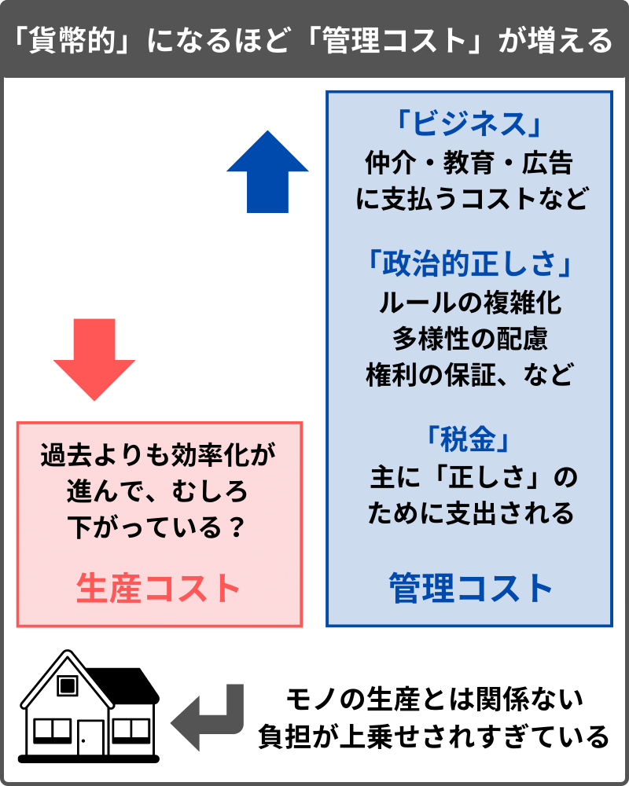
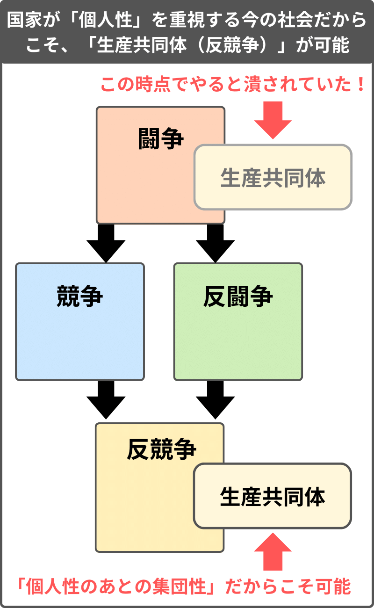

第4章で、「反競争」である「BI」について説明したが、そこでは、今の日本のような社会において、「BI」のような「豊かさ」に舵を切る政治的決定は、少なくとも選挙という方法だけでは難しいと結論づけた。
この第5章では、小規模からでも始めることのできる「反競争」の実践について説明する。
それは、少数の有志を集め、自分たちに利があるような「生産能力の向上」を目指す活動だ。
第0章で、「BI」と「生産能力の向上」が両輪であるとしたが、本章で説明する活動によって「生産能力の向上」が少しずつ実現していけば、それが「BI」という大規模な「反競争」にも繋がる。
目次
- 5.1 第5章の概略
- 5.2 「貨幣的」と「非貨幣的」
- 5.3 「客観的なルールであるほど望ましい」という倒錯
- 5.4 「非貨幣的」な方法が採用されるべき領域
- 5.5 エッセンシャルワークを評価するための方法
- 5.6 なぜ平均的な労働者にとって「持ち家」が難しい社会になってしまったのか
- 5.7 貨幣を否定する「生産共同体」
- 5.8 「貨幣的」であることのメリットとデメリット
- 5.9 「非貨幣的」であることのメリットとデメリット
- 5.10 「思いやり」か「ルール」か
- 5.11 「集団の加害性」と「正しさのライン」
- 5.12 「生産共同体（非貨幣的）」が成立しうる余地
- 5.13 「やりたいこと」のために「生産共同体」を試みる場合
- 5.14 「正しさ」に反する社会問題の解決の仕方
- 5.15 「生産共同体」における「公開性」
- 5.16 リーダーの力が強い「生産共同体」と、労働者の力が強い「会社」
- 5.17 「生産共同体」のビジネス参加
- 5.18 「生産共同体」の可能性
- 5.19 「生産共同体」は「国家」と対立するか？
- 5.20 「専門家集団」と「生産共同体」の対立
- 5.21 医療という「専門性」における「闘争〜反競争」
- 5.22 いかにして医療の効率化が進むのか
- 5.23 「競争」ではなく「反競争」として行われるからこそ、「規制緩和」が「豊かさ」になる
- 5.24 「競争」の悪循環と「生産」の好循環
- 5.25 正しさのあとの信仰
- 第5章のまとめ
5.1 第5章の概略
本章で提示する、小規模でも可能な「反競争」の実践について、最初に概略を述べたい。
まず、本論では、今の日本のような社会を、「個人性（正しさ）」が過剰なものであるとしている。
今の社会は、「集団の欲望」よりも「個人の欲望」が重視されている状態だが、それを、「集団が大きいこと（グローバルであること）」によって起こると考える。
その理由は、集団が大きいほど、「集団のため」と「自分のため」の距離が遠くなるからだ。
「自分」と「集団」の距離が遠い場合、「絶対的な生産（集団のため）」よりも、「相対的な競争（自分のため）」にリソースを使うほうが合理的になる。
では、ここで、「集団」の規模を小さくしたらどうなるか、を考える。
その場合、集団が大きいときと比べて「自分」と「集団」の距離が近くなる。すると、「絶対的な生産（集団のため）」が「自分のため」になる度合いが、それまでよりも高くなる。
小さい集団のほうが、その集団の成否が、自分の生活により直接的に関わるようになるからだ。
このように、集団を小さくするほど、「絶対的な生産（集団のため）」にリソースを使うインセンティブが高まる。
本論で提示する、小規模だからこそ可能になる「反競争」の実践は、「絶対的な生産（豊かさ）」のために、合理的に「小さな集団（ローカル）」を再編しようとする試みだ。
なお、ここでは、「合理的であること（それをやる当人にとって利益があること）」が意識されている。
「闘争」的な観点では、「合理的」という時点で、すでに「集団性」が解体されてしまっている。
ただ、本章で説明するこの試みは、閉鎖的な環境ゆえに成り立っていた「闘争」ではなく、すでに我々が個人になってしまったという前提の上で「集団性」を再構築しようとする、「個人性のあとの集団性（反競争）」なのだ。
本章では、前半で、小規模でも可能な「反競争」の実践について説明する。そして後半では、その活動が社会全体（国家）に及ぼす影響について述べる。
最初は小さな範囲の「自分たち」のためから始まる試みが、影響力を持つようになった結果、社会全体の「生産能力の向上」を引き起こしうると考える。
それを図式的に説明すると、以下のような形で、「集団性」の再起が図られることになる。
「集団性」は、対立する相手がいること（強くなる必要性）によって機能する。
国家同士が対立するのが、旧来の社会において機能してきた「闘争」的な「集団性」であるとするなら、本章で意図している「反競争」的な「集団性」は、「集団性」を再起するために、内側から国家と対立しようとする。
ただこれは、国家の転覆を企てるような極端な話ではなく、むしろ国家という枠組みを再び強く機能させるために、国家に対峙する作用を打ち出そうとする動きになる。また、これは、国家に対して「個人」として要求をするような「政治的正しさ（反闘争）」の動きとも異なる。
そのような「反競争」的な活動は、以下のような特徴を持つ。
- 個々の活動においては、「貨幣」を否定して「絶対的な生産」を重視する
- 政治的な活動においては、国家のルールに対して「簡易化」を要求する
本章で提示する、小規模でも可能な「反競争」の実践は、「貨幣を意図的に否定して、自分たちに必要なものを自分たちで生産する」という試みになる。
なぜ「貨幣」を否定しようとするのかというと、我々は、「貨幣」を使うことで、「個人性（正しさ）」との接続を余儀なくされるからだ。これについては本章で詳しく解説する。
なお、第4章で説明した「BI」は、貨幣を配ろうとする試みであり、それに対して、本章で説明しようとするのは、貨幣を否定する活動になる。
実は、「貨幣を配ること（BI）」と「貨幣を否定する生産活動」は、どちらも「貨幣の影響力を低下させる」という点において共通している。
貨幣は、相対的な多寡によって意味を持つものであり、「全員が相対的な金持ち」になることは原理的に不可能だ。そして、「BI」によって実現が目指されるような「全員に十分な貨幣のある社会」というのは、逆説的に、「貨幣がそれほど影響力を持たない社会」でもある。
「貨幣」の影響力を低下させ、「生産能力の向上（豊かさ）」を目指すという点において、「BI」と「貨幣を否定する生産活動」は、同じ「反競争」の試みになる。
また、「BI」は、「複雑化」が進んでいく国家のルールに対して「簡易化」を要求するものであると言えるが、本章では、「BI」とは別の「簡易化」の要求の例として、国家が管理する利権を解体しようとする「規制緩和」について説明するつもりだ。
以上、本章では、前半に「貨幣を否定する生産活動」について述べ、後半に、「国家のルールに対する簡易化の要求」について述べる。
5.2 「貨幣的」と「非貨幣的」
これから、「貨幣を否定する生産活動」について説明していくが、そのための前提として、「貨幣」について説明する必要がある。
ひと口に「貨幣」と言っても、世の中には様々な貨幣が存在する。
挨拶、配慮、互酬、暗黙の了解など、明文化されない人間関係も、ある種の「貨幣」と見なすことができる。とはいえ、そのような可視化されない信用 は、特定の場におけるローカルな文脈を超えて通用するわけではない。一方で、我々が日常的に使用している日本円のような法定貨幣は、他国の法定貨幣とも一 定のレートで交換することが可能であり、実質的に世界中で使うことができる、グローバルに信用のあるものだ。
つまり、様々なものを「貨幣」と見なすことができるが、その貨幣が、ローカルにしか信用を持たない場合と、グローバルに信用を持つ場合がある。そのような貨幣の信用の度合いを、ここでは、「貨幣的・非貨幣的」という言葉を使って表現することにする。
- 「貨幣的」 ……貨幣がグローバルに信用されている状態（例：ドル、日本円）
- 「非貨幣的」……貨幣がローカルにしか信用されていない状態（例：属人的信用、口約束）
本論では、国家が発行している法定貨幣のような、グローバルに信用のある貨幣を、「貨幣的」な貨幣と呼ぶことにする。
それに対して、属人的な信用、非契約的な口約束、物々交換など、特定の場に依存するローカルな信用を、「非貨幣的」な貨幣と呼ぶことにする。
なお、「物々交換」は、場に強く影響されるという点においてローカルな性質を持つ。例えば、水や電気などの資源は、普遍的（グローバル）な価値が あったとしても、簡単に輸送できないなどの理由で貨幣にはなりにくい。一方で、貴金属、紙幣、電子データなど、輸送しやすく場に依存しないものほど、グ ローバルな性質になりやすい。
「貨幣的」か「非貨幣的」かは、どちらかにはっきり分かれるものではなく、程度問題でもある。
何らかの貨幣は、ローカルな度合いが強まれば「非貨幣的」に寄っていき、グローバルな度合いが強まれば「貨幣的」に寄っていく、と考える。
例えば、国が発行する法定貨幣は、基本的には「貨幣的」な貨幣だが、国によって信用の度合いは異なる。国際的に信用されている国（ルールを守ると見 なされている国）ほど、通貨価値が高くなる傾向にあり、逆に、法律や財政規律を軽視していると見なされている、信用の低い国が発行する貨幣は、それが法定 貨幣であったとしても、価値が低くなりやすい。
日本のような国であっても、これから、何らかの形で対外的な信用を大きく失い、国際法などのルールを守っていないと見なされれば、日本円が「グローバルに信用」されるものではなくなり、「非貨幣的」に寄っていく。
一方、ここでは、友人同士の口約束のような属人的な信頼関係を「非貨幣的」な貨幣とした。ただ、友人同士のやり取りであっても、あとで裁判に適用できるような客観的な形で証文などを残した場合は、「貨幣的」に寄っていくことになる。
何らかの約束を、その文脈を共有していない人にも納得しやすい形で可視化・明文化し、客観的なルールに紐付けようとするほど、それは性質として、「非貨幣的」から「貨幣的」へと向かっていく。
また、日本円のような法定貨幣を介したやり取りであっても、そのやり方によって「貨幣的」か「非貨幣的」かに差が生じる場合がある。
例えば、家族間や友人間などで、特に記録も残さず金のやり取りをした場合、日本円を介しているという点では「貨幣的」だが、会計や納税のルールを厳密に守っていないという点では「非貨幣的」だ。
一方、GDPに計上されるような商取引で、申告と納税がきちんとルールを守って行われている場合ほど、「貨幣的」なやり取りになる。
5.3 「客観的なルールであるほど望ましい」という倒錯
第4章までの内容に紐付けると、「個人性（正しさ）」にあたるのが「貨幣的」、「集団性（豊かさ）」にあたるのが「非貨幣的」になる。
- 集団性（豊かさ）：闘争、反競争：非貨幣的
- 個人性（正しさ）：競争、反闘争：貨幣的
前章までの内容と関連づけた上で、まず、「個人性（正しさ）」が重視されているほど、その国の貨幣価値が高くなりやすいことが言える。
つまり、「競争（ビジネス）」と「反闘争（政治的正しさ）」を重視すると、その社会で扱われる貨幣が「貨幣的（グローバルに信用されていて、貨幣価値が高い状態）」になるのだ。
例えば、なぜ日本円が信用のある「貨幣的」な貨幣なのかを考えると、「日本に税金を納める企業に国際競争力があること（競争）」と、「日本が個人の権利などの国際的なルールを遵守していること（反闘争）」が、大きく影響している。
まず、「競争（ビジネス）」の成果は、法定貨幣の価値と連動しやすい。日本に税金を納める日本企業がグローバル市場でシェアを獲得し、国際収支が黒字になるほど、円の価値は高くなりやすい。逆に、日本企業の商品を欲しがる人が減っていけば、円の価値は下がっていきやすい。
また、「反闘争（政治的正しさ）」も、貨幣価値に影響を与える。日 本の政府が国際的なルールを守らないと見なされた場合、それは円の価値を下げる要因になる。例えば、政府は、国外企業に対して唐突に法外な税金を課すな ど、マーケットの秩序を無視するような強権を発揮することが、原理的に不可能なわけではない。しかし、それをやって国際市場から信用を失うと、国内から資 本が流出しやすくなり、結果的に、経済力と貨幣価値の低下に繋がる。
さらに、労働者の権利、財産権、人権などを守らないことも、信用を落とす原因になる。その過激な場合の例として、不当に個人から財産を没収したり、 人権を無視する政治を行ったり、ナショナリズムを過度に高めて戦争に舵を切ろうとする国家は、国際社会から強く非難され、経済制裁などによってその国の貨 幣価値の低下が図られることになるだろう。
つまり、「市場競争に勝つこと（競争）」と「個人の権利を守ること（反闘争）」の両方ができている、「個人性（正しさ）」を重視している国ほど、「グローバルな信用」があると見なされ、その国が発行する貨幣は「貨幣的（貨幣価値が高い状態）」になりやすいのだ。
なお、上の図の要素に加えて、国家が「財政規律」を重視しているかどうかも、「貨幣的」かどうかに大きく関わる。
通貨発行権を持つ国家は、自国の権限によって貨幣を発行することができるが、財政収支の赤字が膨らむと、それも貨幣価値が低下する要因になる。
国家が「財政収支（プライマリーバランス）」を対外的に公開して、赤字が大きくなりすぎないように気を配るのは、無根拠に信用（貨幣）を作り出しているわけではないと示すことが、貨幣価値の維持のために必要だからだ。
国家の財政支出を増やす「積極財政」には、「市場のルール（相対的な競争）」に対抗して、育児やインフラなど「絶対的な生産」を重視できる可能性がある。しかし同時に、「積極財政」によって財政収支が悪化すると、貨幣価値が低下するリスクが増す。
つまり、「豊かさ」を重視しうる「積極財政」には「非貨幣的」な性質があり、一方で、財政収支のために支出を絞る「緊縮財政」には「貨幣的」な性質がある。
第4章までの内容に接続して言うと、「積極財政（非貨幣的）」は「長期的な可能性（豊かさ）」を重視するもので、「緊縮財政（貨幣的）」は「短期的な確実性（正しさ）」を重視するものになる。
（このような財政の問題については、詳しくは第6章で説明する。）
基本的に、「ナショナリズム（闘争）」を強く打ち出す政策は、「市場のルール」よりも国家の権限を強く機能させる「積極財政」になりやすい。また、「ベーシックインカム（反競争）」も、それが実行された場合は、政府支出を増やす「積極財政」になるだろう。
「ナショナリズム（闘争）」と「BI（反競争）」は、市場における「グローバルな信用（貨幣的）」よりも、国家という枠組みにおける「ローカルな信用（非貨幣的）」を強く機能させようとするものと言える。
一方で、先に述べたように、「国際競争力（競争）」や「法や権利の遵守（反闘争）」は、「貨幣的」な性質のものになる。
つまり、「集団性（闘争・反競争）」を重視すると、「非貨幣的（貨幣価値が低下する）」になりやすく、「個人性（競争・反闘争）」を重視すると、「貨幣的（貨幣価値が上昇する）」になりやすい。

「貨幣価値の低下」を「豊かさ」、「貨幣価値の上昇」を「正しさ」とするのは、違和感があるかもしれない。たしかに個人レベルでは、貨幣価値が下が ると貧しくなったと思うかもしれないが、そのような個人（ミクロ）の視点こそが、「短期的な確実性（個人性）」を志向するものなのだ。
ここで「貨幣的・非貨幣的」の対比を持ち出して述べたかったのは、まず我々は、日本円のような「貨幣的」な貨幣を使うことによっ て、「グローバルな信用（正しさ）」との接続を余儀なくされることだ。そしてそれが、「個人性（正しさ）」の過剰を打破できない状況を生んでいる。
一般に、「使用する貨幣の信用は高いほど良い」あるいは「誰にとっても納得できる客観的なルールであるほど望ましい」と思われることが多いが、それは「正しいから豊かになる」と考えるような倒錯なのだ。そして、その倒錯ゆえに、本来であれば「ローカルな信用（非貨幣的）」が適している場合にも、「グローバルな信用（貨幣的）」が適用されてしまっている。
例えば、「友達を作って一緒に遊ぶ」というのは、「非貨幣的」に行われる性質のものだ。仮にそれを「貨幣的」に行うならば、契約を交わして友人関係 を結びそれを記録に残したり、どこで何をして遊んでどうだったのかを書類にまとめて公的機関に報告したりすることになるが、素朴に考えて、そのようなやり 方は無駄に手間のかかる歪なものだろう。
また、第1章（1.9）などで述べたように、我々は、「ルール」を理解する主体になるまでに「非ルール」を必要とする。出産や育児は、「両者の同意 のもとに契約を交わし、労働の対価として貨幣をやり取りする」といった「正しさ」による取り決めに反したものであり、生まれる前の子供に同意を求めること はできないし、子と親の契約に基づいて育児が行われるわけではない。つまり、我々の存在は、客観的なルールにおける「ルール違反」に頼ることでしか成立しない。
もっとも、「友達だから」「恋人だから」「家族だから」というのも、当人たちにとっては納得できることであり、そこにルールがないわけではない。ただ、友人や恋人や家族に適用されるルールは、万人に同じように適用されるものではないという点において「ローカルなルール（非貨幣的）」になる。
対して、ルールを万人に適用できる客観的なものにしようとするほど、それは「グローバルなルール（貨幣的）」になっていく。
第1章（1.9）では、適用される人とそうでない人がいる「非ルール」と、万人に適用されることを目指す「ルール」との対比を述べたが、その前者にあたるのが本章で言う「非貨幣的」であり、後者にあたるのが「貨幣的」になる。
本章では、適用される人とそうでない人がいる「ローカルなルール（恣意的、曖昧なルール）」を「非貨幣的」、万人に適用されることを目指す「グローバルなルール（客観的、厳密なルール）」を「貨幣的」と定義して、以降の説明を試みる。
また、前章までの内容と繋げて、「非貨幣的」は「豊かさ」を進める「アクセル」であり、「貨幣的」は「正しさ」を進める「ブレーキ」であると考える。
詳細は以降で述べるが、「ローカルなルール（非貨幣的）」が「アクセル」になるのは、それが迅速な協力関係を可能にするからだ。一方で、「グローバルなルール（貨幣的）」は、暴力などから個人の権利を守る「ブレーキ」として機能する。
- 非貨幣的：ローカルなルール ：アクセル
- 貨幣的 ：グローバルなルール：ブレーキ
「非貨幣的」と「貨幣的」の関係は、「集団性（豊かさ）」と「個人性（正しさ）」の関係と同じく、互いに相反し、両者のバランスを意識すべきものになる。
そして、今の社会は「グローバルなルール（貨幣的）」の影響力が強すぎるので、「ローカルなルール（非貨幣的）」に寄っていく必要がある、というのが本論の趣旨だ。
例えば、今の社会において、我々は、協力して何かをしようとするとき、契約を結んで法人を作ったり、労働の対価を日本円で支払うなどのルールを守る。しかし、そうせざるをえない構造こそが「個人性（正しさ）」過剰の原因になっている。この状況を打破するため、以降では、「正しさ」の原因である「貨幣的」な貨幣（日本円）を、意図的に否定する生産活動という選択肢を検討していく。
- 本章では、小規模でも可能な「反競争」の実践について説明する。そのような活動は、「貨幣を否定する生産活動」という形を取り、また、政治においては国家に対して「簡易化」を要求する。
- 本章では、グローバルに信用のあることを「貨幣的」、ローカルな信用に留まることを「非貨幣的」とした。
- 「貨幣的」か「非貨幣的」かは程度問題であり、ルールに客観性があるほど「貨幣的」に寄り、ルールが特定の場や文脈に左右されるほど「非貨幣的」に寄る。
- 第4章までで示してきた「集団性（豊かさ）」と「個人性（正しさ）」の図式と接続すると、「非貨幣的」が「集団性」、「貨幣的」が「個人性」にあたる。
- 「競争・反闘争」といった「個人性（正しさ）」を重視するほど、貨幣価値が上昇しやすい（「貨幣的」になりやすい）。
- 「ルールは客観的であるほど望ましい（正しいから豊かになる）」という倒錯が影響力を持つ形で、「貨幣的」であることが重視されがちだが、友人関係や家族関係など、「非貨幣的」であることが適した領域があり、我々の存在はそれに頼ることでしか成り立たない。
- 「非貨幣的」と「貨幣的」のバランスにおいて、現状を「貨幣的（個人性）」が過剰であるとするなら、それゆえに「貨幣を否定する生産活動」について検討する必要がある。
5.4 「非貨幣的」な方法が採用されるべき領域
今の社会は、例えば、「ルールが客観的であるほど生産の効率が良くなる」などと考えられがちかもしれないが、それは「競争するほど豊かになる」と同じような倒錯だ。
第1章（1.11）で、「個人性」という「ブレーキ」があることで、「集団性」という「アクセル」をより強く踏むことが可能になると説明したように、「客観的なルール（ブレーキ）」によって、結果的に効率的な生産が促されるということはある。
しかし、これについてはすでに何度も本論で説明してきたように、「正しさ」自体は「ブレーキ」として作用する。
「ブレーキ」である「客観的なルール」は、個々の不満を抑制するという形で、大規模な協力を成り立たせるように機能する側面がある。一方、規模が小さいときにそのような客観的なルールを適用すると、オーバースペックになってしまう。つまり、そのルールがあることで得られる利益と、ルールを使用するためのコストが見合わないのだ。
例えば、友人間や家族間のやり取りにおいて、明文化された契約に基づき、貨幣によって対価を支払い、記録や申告や納税などを厳密に行おうとすると、それによって得られる正当性や安心感や納得感（正しさ）に対して、ルールを守るための負担が大きすぎると感じるだろう。
つまり、親しい人たちとの関係においては、「ルールをつくらない状態（曖昧なルール）」であること、すなわち「非貨幣的」な方法が適していて、一方で、大勢が参加するプロジェクトになるほど、「貨幣的」な方法が適していることになる。
このような図式によって何を指摘したいのか。
それは、今の社会は、本来であれば「非貨幣的」な方法が適しているところにまで、「貨幣的」な方法を適用してしまっていることだ。
さすがに出生に関わるものは、今も家庭という「非貨幣的」な方法に頼っているが、それ以外のほとんどの領域において、会社やNPOや個人事業といった「貨幣的」な方法が採用されている。（NPOは利益を追求しないが、審査や監査が必要な点において「貨幣的」。）
本論では、「家庭」よりは多くの人との協力を必要とするが、「市場（貨幣）」には評価されにくい性質の、本来ならば「非貨幣的」な方法が採用されるべき領域があるはずだと考える。
上の図において、家族や友人ほどは「非貨幣的」ではないが、ビジネスほど「貨幣的」ではないような、「非貨幣的」寄りの枠組みを想定することができる。そこに当てはまるのが、本論で説明を試みる「貨幣を否定する生産活動」になる。
5.5 エッセンシャルワークを評価するための方法
「非貨幣的」な生産活動について説明する前提として、「貨幣的」であることがどういうことか、本論のこれまでの内容の繰り返しにもなるが、手短にまとめる。
社会が「個人性（正しさ）」に傾く（社会が「貨幣的」になる）と、以下のようなことが起こる。
- 各々が自己利益を追求するプレイヤーとして対立する
- 記録、申告、保障、配慮など、ルールを守るための負担が増える
- 税金の多くが「豊かさ」ではなく「正しさ」のために使われる
- 「エッセンシャルワーク（社会に必要な仕事）」が評価されにくくなる
まず、貨幣経済が浸透することは、「貨幣を稼いだ者がより多くの分配を手にする」という「相対的な競争」が影響力を持つことであり、「各々が自己利益を追求するプレイヤーとして対立」することになる。「市 場のルール」において貨幣を稼ごうとする努力は、相手に不利を押し付けて自身を有利にしようとするふるまいだが、それは悪意によってではなく、むしろフェ アネスに基づいて行われる。スポーツにおいて、相手がうまくいかないようディフェンスをすることが悪質な行いではないように、市場競争においても、各々が 真面目に市場という競技をプレイするからこそ、負担を押し付け合って全員が苦しくなっていく。
次に、貨幣のやり取りに付随するルールを守ること自体が負担になる。例えば、会計上のルールを守って正確に記録 をつけることは決して簡単な仕事ではなく、一般に企業は、法務や税務といった仕事のために専門の人材を雇い、そこに多くのリソースを費やす必要がある。こ のような義務は、社会が「貨幣的」になるほど杜撰にやることが許されなくなっていく。加えて、第3章で述べたように、「政治的正しさ（反闘争）」は、「ビジネス（競争）」と結託してルールを増やしていく。今は、過去と比べて、企業が人を雇用するときに、所得保障、保険への加入、マイノリティへの配慮など、様々な義務が課されるようになっていて、それらは「正しさ」の働きにより増え続けていく。
また、当然だが、日本円という「貨幣的」な貨幣を介してやり取りをすると、税金を取られる。その税金が、主にインフラ整備や育児支援のような「集団性（豊かさ）」のために使われるなら話は別だが、今の日本は、社会保障のような「個人性（正しさ）」のために支出せざるをえなくなっている。
さらに、貨幣をやり取りする「市場のルール」は、「エッセンシャルワーク」と括られるような、社会に必要な仕事を評価することができない。「人のためになる仕事ほど、市場に評価されて金が儲かる」というのは倒錯であり、貨幣が社会に浸透するほど、「エッセンシャルワーク」は軽視されやすくなる。
このように、「貨幣的」であるほど、生産に対する「ブレーキ（正しさ）」が強く機能する社会になる。
もっとも本論は、このような「正しさ」の作用が悪いものであると主張しているわけではない。「ブレーキ（正しさ）」が機能していないことは、集団の ための同質性を押し付ける圧力が強く働き、個人の自由が否定された状態であることを意味するからだ。これについては本論ですでに何度も、「豊かさと正しさ の相反」という形で説明してきた。そして、現在の問題は、「正しいから豊かになる」という倒錯のもと、「正しさ」が過剰になっていることだ。
また、これは第3章（3.17）で述べたことだが、「正しさ」の過剰が問題であるときに、「正しさの正しくなさ」を指摘するような、「問題への理解を求める」といった方法は機能しにくい。
例えば、エッセンシャルワークが評価されない状況に対して、その不当さを指摘し、社会に対してエッセンシャルワークの重要性を主張しても、それが認知・理解という有限のリソースの奪い合いになれば、結局は「相対的な競争（正しさ）」に回収されてしまうことになる。
では、どうすればいいのか。
エッセンシャルワークを評価するためには、まさにそれが「エッセンシャル」である点に着目する。その仕事が「豊かさ」を作り出して いるのなら、生産物である「豊かさ」を、生産者が直接的に享受しやすい枠組みを構築していけば、エッセンシャルワークは、それ自体の有用性において評価さ れるようになる。
つまり、エッセンシャルワークが評価されないのであれば、不満を持ったエッセンシャルワーカーたちで連帯して、自分たちの労働力や生産物を「ローカル（非貨幣的）」に融通し合えば、それが当人たちを有利にする方法になりうる。
なぜエッセンシャルワーカーが不遇なのかというと、「市場」というエッセンシャルワークが評価されにくい場で、自らの労働を「貨幣」に変換してから、必要なものを購入しようとするからだ。
市場という「グローバルなルール（貨幣的）」において、生産物の分配の優先権は「相対的な競争」の勝者にある。ゆえに、個人の立場からして、「絶対的な生産」に従事するよりも「相対的な競争」のために努力することが合理的になる。
この状況を打破するための方法、つまり「相対的な競争」に勝とうとせざるをえない構造から抜け出すための方法は、「絶対的な生産」に携わることが当人にとって合理的であるような、「ローカル（非貨幣的）」な集団を再編することだ。
そのためには、まず、集団を小さくする。
「絶対的な生産（集団のため）」よりも「相対的な競争（自分のため）」にリソースを使うことが合理的な状況は、集団が大きすぎること（グローバルであること）によって起こる。
それに対して、集団が小さいほど（ローカルであるほど）、「集団のため」と「自分のため」は重なりやすくなる。集団が小さければ、「絶対的な生産（集団のための仕事）」が、自分自身の生活水準の向上に直接的に反映されやすいからだ。
単純に考えても、顔も知らない人たちと「貨幣」を通じて繋がる社会より、互いに見知った関係の小さな規模の共同体のほうが、エッセンシャルワーク（素朴にみんなの役に立つ仕事）が高く評価されやすいだろう。
このような図式によって、例えば、今の社会において政治（選挙）が機能していない理由なども説明することもできる。現在の選挙は投票率の低さが問題 視されているが、個人の立場からすれば、政治のような「集団のため」にリソースを使うよりも、そのぶんのリソースを「自分のため」に費やして競争に勝とう とするほうが、その当人からすれば合理的なふるまいになる。
実際に、かつての投票率が今ほどは低くなかった要因として、当時の人たちが政治についてよく考えていたというよりは、「ローカル（地元）」が強く機 能していたというのが大きいだろう。政治という集団のための試みが成り立ちやすいのは、「国（大きな集団）」のことよりも、「自分たち（小さな集団）」の ことを考える場合なのだ。
つまり、社会に必要な生産活動を促すにしても、政治を機能させるにしても、「集団のため」と「自分のため」が近くなるような「ローカル」を再編する必要がある。
そして、そのための方法が、それを使うことで「グローバル」との接続を余儀なくされる「貨幣」を否定することなのだ。ゆえに、「ローカル」の再編は、「貨幣を否定する生産活動」という形で行われる。
ここまでの話はやや抽象的だったかもしれないが、以降では、「なぜ貨幣を介することで負担が増えるのか？」「なぜ貨幣を否定したほうが有利になれるのか？」について、より具体的な状況を想定しながら説明していく。
5.6 なぜ平均的な労働者にとって「持ち家」が難しい社会になってしまったのか
ここからは、具体的な例として、「住居」について述べようと思う。言うまでもなく住環境は、素朴な生活の豊かさや安心感にとって、大きな意味を持つ。
近代化以前の、今よりもずっと技術水準が低い時代にも、住居は建設されていた。少し前の日本には、持ち家が当たり前とされていた時代もあった。
一方で、今の日本の平均的な所得の若者が、自力で住居を購入することは、決して簡単ではないだろう。かつては当たり前に自宅を持てていたのに、テク ノロジーが向上したはずの現代において、多くの人にとって住居の購入が非現実的なほどハードルの高いものになっているという、何か矛盾したようなことが起 きている。なぜこのような状況になってしまったのか？
その問いに対する本論の解答は、「貨幣的」になりすぎたから（「正しさ」が過剰だから）、となる。
ある人が、持ち家を欲しいと考えているとする。もはや今の日本で持ち家を購入しようとする人は少数派かもしれないが、ひとまずここでは、説明のためにそう仮定する。
持ち家が欲しいとき、市場で十分な貨幣を稼いで購入するか、信用を認められてローンを組むことが、今の社会が前提としている正攻法であり、それは「貨幣的」な方法になる。
その「貨幣的」な方法を疑うのが本章の趣旨だが、まずは「貨幣的」な方法がどのようなものかを説明する。
「貨幣的」に住居を購入するとき、住居の値段に、それが売り出されるまでにかかったコストが反映されると考え、ここではそれを、「生産コスト（豊かさ）」と「管理コスト（正しさ）」に分ける。
「生産コスト」は、素材の生産、加工、運送、建設の作業など、実際に手を動かして住居を作るための労働力であるとイメージして欲しい。これは、主に「絶対的な生産（豊かさ）」のために必要なコストになる。
「管理コスト」は、人材を募集したり、購入時の審査をしたり、事務手続きをしたり、広告や営業をしたりなど、モノの生産以外にかかる労働力とイメージしてほしい。これは、主に「相対的な競争（正しさ）」のために必要なコストになる。
実際の「生産コスト」と「管理コスト」は、簡単に切り分けられるものではないだろうが、ここではあえてふたつを別々に分けて考える。
その上で説明をすると、「貨幣的」になるほど、両者のうちの「管理コスト」が嵩んでいきやすい。
ここでは、説明のために、社会が「貨幣的」になることで、どのような変化が起こるのかを図示していく。
先に、社会が「貨幣的」に傾くと何が起こるのかをまとめたが、まず、旧来的な信頼関係が解体され、「各々がプレイヤーとして対立する」ようになる。
「非貨幣的」な、伝統的な圧力の強い社会では、同じ会社や同じ職種の人間は、良くも悪くも「同じ仲間」だった。それが「貨幣的」な関係になるほど、 各々が「競争の上位を目指す個人プレイヤー」になっていく。これは、「正しさ」の観点からは望ましいことなのだが、会社（経営者）と社員にしても、社員同 士にしても、互いに互いを出し抜こうとする競争相手のような関係になり、気にしなければならないこと（リソースを割かなければならないこと）が増える。
社員は、自分の実力が評価されやすくなる一方で、ただ与えられた仕事を真面目にこなしているだけではライバルに遅れを取るので、個人としてのキャリアアップを意識しなければならなくなる。
社員が、スキル向上、資格の取得、転職、副業などによってキャリアアップを図るようになると、経営側は、社員が不満を持って会社を辞めないように、 昇進や賞与など様々な制度を整え、その仕事が有利なキャリアに繋がることをアピールするなど、やらなければならないことが増える。
労働者が転職しないように企業が配慮しなければならないというのは、労働者にとって有利なように思えるかもしれない。しかし、常に互いに警戒し合うような状態になることで、両者の負担が増えていく。経営側は自社が所属し続けるに値する会社であることを、労働者側は自身が雇用し続けるに値する人間であることを示すため、双方がリソースを使わなければならなくなった。
旧来的な信頼関係が解体されたことによって、自由になったが、それゆえに互いの負担が増えてしまうのだ。
そして、雇用の流動性が高まると、「仲介・教育・広告」といった業種が、企業と労働者の間に挟まり、影響力を持つようになっていく。
まず、流動性が高まる（会社を移動する人が増える）ほど、転職を仲介してマージンを稼ぐ仲介業が増えることになる。
さらに、「日本型雇用」における、企業による社員の職業教育は、雇用の流動性の低さ（社員が会社を辞めにくいこと）を前提にして成り立っていたものであり、転職が増えるほど、社内教育は外部化されやすくなる。教 育を専門に行う事業が、かつて会社の内側で行われていた職業教育を肩代わりするようになっていくのだ。そうやって外部化された教育ビジネスは、消費者にそ の価値を認めてもらうことで収益を得るという「市場のルール」のもとに行われる以上、「いかにキャリアアップするか」「いかに有利な資格を手に入れるか」 といったような、個人を「相対的な競争」に駆り立てる性質のものになりやすい。
雇用の流動化に伴って、広告も増える。かつては、地域の繋がりや学校の先生の紹介などのような信頼関係によって 人を雇用していた企業が多かったが、今の企業は、採用のために多くの広告費をかけなければならなくなった。企業は、どうすればその仕事に興味を持ってもら えるかに苦心するようになり、また、応募してきた者を選別するためにもコストが必要になる。さらに、そうやって雇用した人材も、転職を煽られる風潮の中で すぐに辞めてしまうかもしれず、社員を引き止めるための工夫をし続けなければならない。
仕事募集の広告は、幾多の広告の中からそれに興味を持ってもらわなければならないという性質上、マッチングアプリにおいて男女が外見や経歴を盛りや すいのと同様に、実態以上にそれを良く見せようとするような、ある種、リテラシーの低い人を騙すものになっていく。企業側はそれをやらざるをえないという 事情があるが、労働者側は不信感を持ち、企業と労働者の信頼関係が解体されていく。
「仲介業・教育業・広告業」は、流動性が高まるほど儲かりやすい業種であり、積極的に企業と労働者の不和を後押ししようとする。しかし、そのようなビジネスの動きは、今の社会においては「善い（正しい）」ことと見なされる場合が多い。第3章（3.13）で述べたように、「ビジネス」は「政治的正しさ」と結託して、「集団」を解体していこうとする。
「仲介業・教育業・広告業」のようなビジネスによって、企業の負担が増やされていくが、そこからさらに、企業は「政治的正しさ」への配慮をも求められる。
「ビジネス」と「政治的正しさ」は、「個人性（正しさ）」において結託し、集団（企業）の「やるべきこと」を増やしていく。
マイノリティへの配慮や社会問題への取り組みなど、「政治的正しさ」に関するものが企業の義務に加わり、その動きは「仲介業・教育業・広告業」などの「ビジネス」とも結託している。
先に、「貨幣的」になるほど「記録、申告、保障、配慮などのルールを守る負担が増える」と述べたが、企業に要求される「正しさ」の基準が厳しくなるほど、ルールをより厳密に守らなければならなくなる。記録や申告のような以前からあった義務にしても、かつては大雑把にやっていたのが許されなくなっていき、さらに、税務や法務自体も「正しさ」の働きによって「複雑化」して、まともにこなす負担が増えている。企業が負担する社会保険料なども過去と比べて高くなり、企業の「理解すべきこと・やるべきこと」は増え続けている。
そして、複雑になっていく諸々の手続きなどを一般企業が行うのは難しくなり、それらを代行してくれる人材派遣のような仲介業が影響力を持つようになる。
このように、「ビジネス」と「政治的正しさ」は、結託して集団を解体していく。そうやって集団が解体されるほど、協力関係が機能しなくなり、「豊か さ」が欠如していくのだが、「正しいから豊かになる」という倒錯のもと、「個人性（正しさ）」を重視する動きは進み続けている。
また、詳細は第6章で述べるが、「税金」は、国家が「正しさ」よりも「豊かさ」を重視するための手段になりうる。しかし、政府支出の多くが社会保障費に使われる今の日本では、市場における取り引きのたびに徴収される税金も、その大部分が、相対的な弱者性を認められた「マイナスの競争」の勝者に分配される。つまり今は、「税金」も、主に「個人性（正しさ）」のために使われる。
ここまで述べてきた、仲介業・教育業・広告業のような「ビジネス」や、ルールの厳格化・権利の保障・多様性への配慮のような「政治 的正しさ」、社会保障費に使われる「税金」は、最初に図式を提示した、住居の値段に反映される「生産コスト」と「管理コスト」において、主に「管理コス ト」のほうを増やす。
「個人性（正しさ）」が進み、社会が「貨幣的」になるほど、「管理コスト」が膨れ上がっていくのだ。
住居の建設のようなモノを作る仕事であっても、それが「市場のルール」のもとで貨幣を交換して行われる以上は、ここまで述べてきた「管理コスト」の増加を無視することができない。
「生産コスト」のほうはむしろ、過去よりも効率化されているかもしれない。一方で、「管理コスト」のほうは、過去よりもずっと大きくなっている。

かつての社会と比べて、例えば、以下のような負担が増えたことになる。
- 企業が、人材募集や、社員の流出阻止のために、他よりも相対的に優れた仕事であることをアピールしなければならないコスト
- 労働者が、職を得るために、スキルアップ・自己PR・キャリア形成を意識しなければならないコスト
- 複雑化した法務や税務などの事務作業をこなすコスト
- 補助金の獲得や、税金の支払いで有利になるために、複雑な制度を理解するコスト
- マイノリティへの配慮や社会問題への取り組みなど「政治的正しさ」に要求されるコスト
- 取り引きをするごとに支払わなければならず、「正しさ」のために支出される「税金」
上のような負担は、実際に住居を建設する労力とは関係ないが、「貨幣」によって住居を購入しようとするとき、価格に上乗せされる。
加えて、上では主に企業と労働者との関係にフォーカスして述べてきたが、「市場のルール」は、例えば、買い手と売り手との間においても、旧来の信頼 関係を解体し、互いに不利を押し付けるインセンティブを機能させる。そのため、住居の売り買いにおいて、「騙されないように勉強するコスト」など、素朴に 必要なものを購入する場合とは別の労力も発生しやすくなる。
第2章（2.8）で述べたように、「ビジネス（相対的な競争）」は、優秀な個体でなければ生き残れないかのような「自然」を再現しようとする性質があり、ゆえに、その作用によって、全員が苦しくなっていく。
本論は、生産と直接関係のないコストを増やしていくような「ビジネス」や「政治的正しさ」を、なくなるべき仕事であると主張したいわけではない。こ れらの負担は、自由の代償のようなものであり、各々が「市場のルール」に従って真摯に努力することで必然的に生じる。「仲介業・教育業・広告業」のような ビジネスも、自由を求める個人のニーズによって成り立つものであり、それらが禁止されている状態は、個人の自由が否定されていることを意味する。
ただ、程度問題として、現状は、社会が持続不可能なほど「個人性」が過剰になっている。ゆえに、もう少し「集団性」を重視する動きがあっていいのではないかと思う人は少なくないだろう。
「相対的な競争」に勝ち抜くための試みは、構造的に、「倫理的に咎められないギリギリを狙って、相手により多くの負担を押し付ける方法を編みだす努 力」や、「それぞれがそれぞれに不利を押し付け合い、過剰にシステムが複雑化していくなか、自身の優位性を獲得しようとする努力」に向かいやすいが、そこ に費やされているリソースが、少しでも「絶対的な生産」に使われるような構造の変化が起これば、もっと生活が楽になっていくのではないか、という問いは あってしかるべきだ。
では、いかにして、「相対的な競争」に勝つための努力をせざるをえない社会から、「絶対的な生産」に取り組むことが合理的になるような構造的な変化を起こしうるのか？
現状を打開する可能性は、先ほど述べた図における「生産コスト」と「管理コスト」の差にある。
現物を作る労力とは別の「管理コスト」が膨れ上がっているのだとしたら、住居が欲しいと考えている人の視点で、「もしかすると、市場で貨幣を稼いで購入するよりも、自分で作ったほうが楽に手に入るのではないか？」という考えが生まれてくるかもしれない。
もっとも、自分ひとりだけで作ろうとすると、協力関係の行われない「個人（グローバル）」になってしまう。
効率的な生産のためには、複数人で協力して行うことが必須だが、それを、「相対的な競争」より「絶対的な生産」が重視されやすい「小さな集団（ローカル）」によって行うことに意味がある。
「大きな集団（グローバル）」における「貨幣的」な貨幣を介して住居を購入するのではなく、「小さな集団（ローカル）」を結成して、「自分たちに必要なもの（住居）を自分たちで生産しようとする」のだ。
例えば、やや極端な例だが、同じように住居が欲しいと思っている人を何人か集めて、全員ぶんの住居を順番に作っていこうとする。そのやり方のほう が、最終的な目標を「1人に1軒の住居」とした場合でも、平均的な労働力を持つ者の立場からして、「住宅を購入できるだけの貨幣を稼ぐ」よりも現実的な選 択肢になる可能性がある。

「住む家を作る」といったような、生活に直接関わる性質の仕事（エッセンシャルワーク）は、今よりも「貨幣的」な度合いを落として「非貨幣的」に協力し合ったほうが、うまく行く可能性があるというのが、本章で主張したいことだ。
なお、「非貨幣的」な協力をするにあたって、専門技能を否定するわけではなく、むしろ「生産能力の向上」を強く意識する。ここでは、「非貨幣的（ローカル）」だからこそ、「生産能力の向上（効率化・省力化・自動化）」が行われやすくなるという考え方をしている。
先に述べたように、「貨幣的（グローバル）」である場合、「集団のため」と「自分のため」が遠いゆえに、「相対的な競争」に取り組むことが合理的に なり、個人の努力が、「いかに集団のための生産に関わらなくてもいい勝者のポジションを手に入れるか」という不毛なものになりやすい。
一方で、「非貨幣的（ローカル）」である場合、「集団のため」と「自分のため」が近いゆえに、集団のための生産が自身の生活に直結し、「絶対的な生産」に取り組むインセンティブが機能する。自分たちで生産したものを自分たちで享受するのであれば、「生産能力の向上」は、まさに直接的に自分たちの生活を豊かにしてくれるという率直な理由によって、望ましいものになる。
ここまでは住居の例を出してきたが、食糧生産や育児やインフラ整備などのエッセンシャルワークも、「非貨幣的」なやり方のほうが適している場合がある。
以降では、平均的な労働力を持つ者の立場からして、自身の労働力を「貨幣」に変換して必要なものを購入しようとするよりも、利害を共にする仲間と「小さな集団（ローカル）」を結成して、「非貨幣的」に生産活動に取り組んだほうが、当人にとって合理的な選択になる場合があることを説明したい。
5.7 貨幣を否定する「生産共同体」
本章のここまでの内容は、まず、「貨幣的（グローバルな信用）」と「非貨幣的（ローカルな信用）」の対比を述べた。
そして、平均的に労働力を持つ者の立場からして、自らの労働力を「貨幣的（グローバル）」にやり取りするよりも、「非貨幣的（ローカル）」な生産活動に取り組んだほうが、当人にとって有利になる可能性について指摘してきた。
ここでは、「非貨幣的」な生産活動を行おうとする集団を、便宜的に、「生産共同体」と呼ぶことにする。
また、「生産共同体」による活動は、「反競争」的なものになるとしたい。「反競争」的というのは、すでに我々が個人であるという前提の上で、合理的に集団を再編しようとする「個人性のあとの集団性」ということであり、地縁血縁のような「闘争」的な共同体とは区別されることになる。
「生産共同体」は、「正しさ」の問題に対処する「反競争」の取り組みであり、「相対的な競争（競争・反闘争）」の上位にならなくても生活できる状態を目指す。そしてそのために、自分たちに必要なものを自分たちで生産しようとする。必要なものを直接生産することができれば、競争に勝って分配の優先権を得る必要がないからだ。
本論ですでに何度も述べてきたが、競争の過剰に対して「競争の過剰が問題だ」と主張する試みは、それもまた認知・理解のリソースを奪い合う競争に回 収されるという形で、「相対的な競争（正しさ）」を補強してしまう。そのような構造に対処する方法は、「競争に勝てなくとも問題なく生活できる手段を持つ こと」であり、それを行おうとするのが「生産共同体」の試みだ。
先に述べたように、我々は、日本円のような「貨幣的」な貨幣を介することによって、「相対的な競争（競争・反闘争）」との接続を余儀なくされる。ゆえに「生産共同体」は、貨幣を否定しようとする。
ただ、ここでは、日本円をいっさい使わないといった極端なことを想定しているわけではない。
強調したいのは、あくまでも「生産共同体」は、それを行う当人たちにとって、自身を有利にするためのひとつの方法であることだ。
そのため、貨幣の使用を禁止するようなことはせず、「貨幣的」なやり取りが適しているものは「貨幣的」に、「非貨幣的」なやり取りが適しているものは「非貨幣的」に、当人にとって都合の良いように使い分けることが推奨される。
実際のところ、「生産共同体」の活動は、多くの人にとって、賃労働と同時並行で行うものになるだろう。
では、「生産共同体」でどのようなことを行うのか。例えば、以下のような活動が挙げられる。
- 集団を作って、家賃、食費、雑務、ケアワークなどのコストを下げる
- 住居や食料など、自分たちに必要なものを自分たちで生産する
- 生産に携わる人たち同士で、労働力や生産物をローカルに融通し合う
- ノウハウを共有することで「生産能力の向上」を目指す
- 市場に評価されない「社会に必要な仕事」に取り組む
まず、「生産共同体」は、集団を結成することで生活のコストを下げようとする。人は、単に集まって生活するだけでも「豊かさ」が向上する。
現在もシェアハウスなどの形で行われているように、集団で住んだほうが、家賃や食費が安くなりやすいし、家事なども効率化しやすい。
育児や介護のようなケアワークも、集団で行うと楽になる場合が多い。例えば、1人で1人の子供の面倒を見るのと比べて、10人で10人の子供の面倒を見たほうが、余裕を持ちやすく、休憩時間や自由時間を捻出できるようにもなりやすいだろう。
集まって生活をすると「豊かさ」が向上するが、それをやることで、市場の交易量は減りやすく、暴力が発生するリスクも高まるので、「正しさ（競争・反闘争）」には否定される。
実際に今の社会では、「正しさ」の作用により、契約もなく漠然と人が集まることは良くないものと見なされやすい。まずはそのような呪縛から抜け出 し、「豊かさ」のための合理的な方法として集団を結成して、生活の負担を軽くしていこうとすることが、「生産共同体」の始まりになる。
次に、「生産共同体」は、集まることによる効率化・省力化からさらに踏み込み、可能な範囲で、生活に必要なものを自分たちで生産しようとする。「貨幣を稼がなくても生活できる状態」を目指すのであれば、まずは、住環境の整備や食料生産などに取り組むことになりやすいだろう。
「生産共同体」の活動は、素人の自給自足のような能率の低いやり方を意図しているわけではなく、むしろ、効率的に協力し合い、生産に関する技能や知恵を発展させていくために「ローカル」の再編を試みる。「自分たちで生産したものを自分たちで享受する」のならば、そこには、「生産能力の向上（豊かさ）」を進める素朴なインセンティブがあることになるからだ。
今の社会でエッセンシャルワーカーが不利になりやすいのは、その仕事が「相対的な競争」で有利になる性質のものではないからだ。だが、「生産共同 体」という枠組みがあることで、エッセンシャルワークで身につけた技能を、自分たちを直接的に豊かにするために使いやすくなり、であれば、キャリアを「絶 対的な生産」に寄せていっても、総合的に採算が取れるようになりやすい。
「生産共同体」があることで、貨幣収入を得るための仕事としても、「絶対的な生産」に携わるエッセンシャルワークを選びやすくなるのだ。
さらに、「絶対的な生産」に携わる人たち同士が、生産物や労働力を「ローカル（非貨幣的）」に融通し合うことで、より有利になれる可能性がある。例えば、家を作るのが得意な人たちと、食料を作るのが得意な人たちとで、互いの生産物を交換したり、互いの仕事を手伝い合うことによって、効率的な分業や協力関係が可能になる。
一般にこのような協力関係は、貨幣を介することで円滑に行われるものと見なされている。だが、本論でこれまで説明してきた理由により、「個人性」が過剰な今の社会においては、むしろ「貨幣的」な貨幣を否定することで、「豊かさ」のための協力関係が成り立つようになるのだ。
「生産共同体」は、まずはそれを行う当人たちにとって利のある活動として始まる。ただ、マクロで見たとき、社会全体の「生産能力の向上」を進める可能性がある。
例えば、空き家を上手にリフォームする方法や、空いた土地で始めやすい農作物の作り方のような、「自分たちに必要なものを自分たちで作る」ための方 法が、動画サイトなどで共有され、優れたアイデアやノウハウが積み上がっていけば、後から続く人たちは、過去よりも楽に生産活動ができるようになる。
「生産共同体」の試みが盛り上がるほど、様々なアイデアやノウハウが共有されやすくなり、後続の参加者が楽になっていく。このような形で、「生産能力の向上」に期待することができる。
そして、「生産共同体」は、長期的には、「市場のルール」に評価されない、社会にとって必要な仕事に取り組もうとする。
「大きな集団（グローバル）」であった場合、インフラや介護のような社会に必要な仕事が維持できなくなる問題に対して、「社会は衰退していくけど、 せめて自分だけは貯金を作って乗り切ろう」など、個人が「相対的な競争」に勝とうとする形で問題への対処が図られる。そのような構造ゆえに、重要な問題へ の取り組みが進まないのが現状だ。
「全員（大勢）」の問題だからこそ、各々が「自分だけ」は何とかしようとして、それゆえに協力がうまく行われなくなってしまう。
それに対して、「生産共同体」は、「小さな集団（ローカル）」を再編することで、社会問題を「自分たち」の問題にする。そうすることによって、協力して問題に取り組むことのできる可能性が生まれる。
例えば、道路、電気、水道などのインフラを整備するような仕事は、市場という「相対的な競争」においては評価されにくい。しかし、「生産共同体」に おいて、インフラ整備を「自分たち」の住む場所を良くしていける方法と捉えるならば、当人たちにとって、それに取り組む素朴な動機があることになる。
また、介護のような事業は、介護される人間が貨幣を稼げないゆえに市場性が低いが、「自分たち」の将来にとっては重要な問題だ。いずれは「自分た ち」が享受するものとして介護を捉えるなら、「自分たち」のために、例えば「自動化された介護システム」のようなプロジェクトを進めようとする動機がある ことになる。
「小さな集団（ローカル）」であることによって、インフラや介護などを、「自分たち」の問題だと捉えられるようになる。そして、各々の「生産共同体」がそれに取り組み、アイデアやノウハウが共有されていけば、社会に必要な仕事において、「効率化・省力化・自動化（生産能力の向上）」が進んでいく可能性がある。
今の社会において、何らかの目標や野心を持った人間は、その手段として「法人（会社）」を立ち上げることが多く、それが実質的に唯一の選択肢になっている。それに対して本論は、「生産共同体」という手段が選択肢に加わる可能性を提示したい。
その場合、何かを協力して行おうとする手段として、「会社・NPO」のような「貨幣的」な方法と、「生産共同体」のような「非貨幣的」な方法があることになる。
- 会社・NPO：明文化された契約を交わす「貨幣的」な方法
- 生産共同体：必ずしも契約を交わさない「非貨幣的」な方法
今の我々が当然視している「会社」という「貨幣的」な方法は、明文化・客観化された契約を重視する。
一方で、「生産共同体」という「非貨幣的」な方法は、友達や恋人をつくるときと同じように、属人的な（非契約的な）信用によって協力し合おうとする。
「会社」の場合は、会計の記録や申告が義務であるのに対して、貨幣を否定する「生産共同体」は、貨幣を介した取り引きに付随する義務は負わない。
また、両者には、「貨幣を稼ぐことを目指す」か、「貨幣を稼がなくてもいい状態を目指す」か、という対照的な違いがある。
ここまで、「生産共同体」について説明してきたが、本論では、「生産共同体」という「非貨幣的」な方法を、無条件に素晴らしいものとして提示しているわけではない。
「会社（貨幣的）」にしても「生産共同体（非貨幣的）」にしても、それぞれメリットとデメリットの両方があり、目的や状況に応じて、どちらのやり方が適しているかが分かれる。
しかし、今の社会には実質的に「会社（貨幣的）」という選択肢しかなく、本来ならば「生産共同体（非貨幣的）」が適している場合でも、「貨幣的」な方法が採用されてしまい、それゆえに「個人性（正しさ）」が過剰であるというのが、本論で主張したいことだ。
以降では、下の問いに答える形で、「生産共同体」の可能性を検討していく。
- 「会社（貨幣的）」のメリット・デメリットと、「生産共同体（非貨幣的）」のメリット・デメリットを比較した上で、どの場合にどちらが適しているか？
- どのような人が、どのような目的において「生産共同体」を立ち上げ、それがどのように機能するのか？
- 「生産共同体」と既存のルールとの対立において、社会にどのような変化が生じるか？
- 「ルールが客観的であるほど生産の効率が良くなる」と思われがちだが、ルールを全員が納得できるものにしようとするコストは「ブ レーキ（正しさ）」として作用する。属人的信用が機能しやすい小規模の活動であれば、「客観的なルール（貨幣的）」よりも「曖昧なルール（非貨幣的）」を 使ったほうが、効率的に協力しやすい。
- 貨幣が影響力を強めるほど（社会が「貨幣的」になるほど）、「自己利益を追求する者同士の対立」「ルールを守るための記録や申告の負担」「多様性や弱者性へ配慮する義務」「取り引きのたびにかかる税金」など、生産とは関係のないコストが嵩むようになる。
- 「大きな集団（グローバル）」であるほど、「集団のため」よりも「自分のため」にリソースを使って「相対的な競争」に勝とうとす ることが合理的になる。対して、「小さな集団（ローカル）」を再編すると、「集団のため」と「自分のため」が近くなり、「絶対的な生産」にリソースを使う 合理性が生まれる。
- 「住居を作る」など素朴に生活の豊かさに関わる仕事において、「貨幣的」になりすぎた社会では、実際にモノを作る労力とは別のコ ストが大きくなっている。そのため、労働力を有する者の立場からして、労働力を「貨幣」に変換してから必要なものを購入するよりも、「小さな集団（ローカ ル）」を結成し、自分たちに必要なものを自分たちで直接的に生産したほうが、有利になれる可能性がある。
- 我々は、日本円のような「貨幣的」な貨幣を介することで「競争・反闘争（正しさ）」に接続されてしまうので、「非貨幣的」に「豊かさ」を重視したいならば、意図的に貨幣を否定する必要がある。
- 本論では、「非貨幣的」に生産活動を行おうとする「反競争」的な集団を、「生産共同体」と呼ぶ。
- 「生産共同体」の活動として、「集団になることで生活のコストを下げる」「自分たちに必要なものを自分たちで作る」「労働力や生 産物をローカルに融通し合う」「ノウハウを共有して生産能力の向上を目指す」「市場に評価されない社会に必要な仕事に取り組む」などが挙げられる。
- 現在、集団で協力して何かをしようとするとき、「会社」という「貨幣的」な方法しか選択肢に浮かびにくい。しかし、目的や状況によっては、「生産共同体」という「非貨幣的」な方法のほうが適している場合がある。
5.8 「貨幣的」であることのメリットとデメリット
「貨幣的」な方法である「会社」と、「非貨幣的」な方法である「生産共同体」とを比較するために、まずは、それぞれのメリットとデメリットについて説明する。
ここで言う「メリット・デメリット」は、「会社」の場合は「その会社の社員」といったように、集団に所属する側の視点でのものと、ひとまずは考えてほしい。
では、最初に、「会社（貨幣的）」のメリット・デメリットについて述べる。
今の社会は、実質的に「会社（貨幣的）」という選択肢しかないような状態なので、そもそもメリットとデメリットがあるという発想になりにくいかもしれないが、「生産共同体」と対比することで、我々が素朴に前提としている「会社」という枠組みの特徴がわかる。
「会社（貨幣的）」という方法のメリットとして
- 個人に対して客観的な評価が与えられる
- 暴力や理不尽を防ぐルールが機能しやすい
ことが主に挙げられる。
「会社」で働いて給料（日本円）をもらうと、それは、「グローバルな信用（貨幣的）」という形で対価を与えられたことになる。
日本円のような「貨幣的」な貨幣は、その時々で為替レートの変動はあるものの、基本的には、世界のどこへ行っても同じような価値を持つ。また、「貨 幣的」な貨幣は、基本的には、どんな人間でもそれを支払えば同じ扱いを受けられるものとして機能する。これはつまり、「貨幣的」であるほど、「個人の自 由」や「権利の平等」が実現されやすいと言える。
「会社」で働くことで得られる日本円は、世界中の誰もが欲しがる「客観的な評価」であり、そのような形で対価を得られることは、個人にとってメリットと言えるだろう。
また、貨幣は、暴力や理不尽から個人を守るように機能する。
第1章（1.3）（1.4）で述べたように、貨幣を稼ぐほど多くの分配を得られる「市場のルール」は、個人を自己利益の追求に走らせるがゆえに、加害性を抑制する。
加えて、「貨幣的」な貨幣を介した取り引きの場合、何らかのトラブルが発生したときに準拠できるルール（法律）が充実している。
ルール（法律）は、完璧なものとは言えなくとも、その社会が「貨幣的」であるほど、より多くの人にとって納得しやすい「客観的なルール」であるため の努力が続けられている。そのようなルールがあることで、個人は、例えば会社から理不尽な扱いを受けたときなど、「正しさ」を味方につけて（法律に準拠し て）抵抗することができる。
以上が、「貨幣的」であることのメリットになる。
では次に、「会社（貨幣的）」という方法のデメリットとして
- 他人の負担を増やすインセンティブがある
- 客観的なルールを維持する負担が大きい
ことが主に挙げられる。
すでに本論で繰り返し述べてきたが、「市場のルール」は、「人のためになる仕事をするほど、市場に評価されて多くの貨幣を得られる」といったものではなく、むしろ、相手に不利を押し付けるインセンティブを機能させる。
社会が「貨幣的」になるということは、周囲の人に感謝されて得られる「ローカルな信用（非貨幣的）」よりも、誰かの負担を増やして得られる「グローバルな信用（貨幣的）」のほうが割が良くなるということでもある。
相手を不利にするインセンティブが機能していることは、素朴な規範と良心を持って仕事に取り組もうとしている人にとって、労働を憂鬱なものにしやすいだろう。
また、これも先ほど説明したが、「貨幣的」に取り引きをしようとするほど、記録、申告、保証、配慮など、実際にモノを作る生産とは関係のないコストが増える。
「貨幣的」であるための「客観的なルール」は、それが万人に納得されるものであろうとするゆえに、膨大な議論や更新が必要で、それを維持するためのコストが嵩んでいく。
個人の立場からしても、「客観的なルール」は、決して使い勝手の良いものではない。「貨幣的」のメリットとして、法律に準拠して暴力や理不尽に抵抗できることを述べたが、実際には、何らかのトラブルに対して裁判で対処しようとすると、非常に多くの手間や労力を要する。
小さな問題が起こるたびに法に訴えかけるのは、あまりに非効率であり、ビジネスの現場において起こるトラブルの大部分は、慣習や常識といった「非貨幣的」な形で処理されているだろう。
「客観的なルール」は、「正しい」がゆえに、生産とは別のコストが多くかかるものになってしまう。
以上、「貨幣的」であることのメリットとデメリットについて説明した。
ようするに、「間違いが起こりにくいが、非効率的」というのが「貨幣的」の特徴になる。
一方、「貨幣的」のメリット・デメリットが反転したのが「非貨幣的」の特徴で、それは、「効率的だが、間違いが起こりやすい」といったものになる。
5.9 「非貨幣的」であることのメリットとデメリット
「生産共同体（非貨幣的）」という方法のメリットとして
- 他人を楽にするインセンティブがある
- 手軽に協力し合うことができる
ことが主に挙げられる。
「非貨幣的」であることのメリットは、誰かを不利にする必要がなく、単純に、生活の豊かさに寄与する仕事に取り組めることだ。
人のためになることをする素朴なインセンティブがあることが、「非貨幣的」であることの大きな美点と言えるだろう。
パイを奪い合う「相対的な競争」をしている場合、他所の成功は自分たちの取り分の減少を意味する。一方で、パイそのものを作り出す「絶対的な生産」をしている場合、他所が盛り上がることで、自分たちも分け前をあずかりやすい。
「会社」の場合、「相対的な競争」の上位を維持できなければ（十分な金を稼げなければ）存続が危うくなる。そのため、例えば、競合他社の業績が良くなることは、自分たちにとっての不安材料だ。
一方で「生産共同体」の場合、「相対的な競争」をしているわけではないので、他所が成功しても、自分たちの生活が脅かされるわけではない。むしろ、 「生産共同体」の活動が全体として盛り上がるほど、生産のためのアイデアやノウハウが共有されやすくなるので、他所の成功は基本的に歓迎すべきことにな る。
自分の行いによって誰かの余裕が増えれば、その誰かがさらに余裕を増やし、それが巡り巡って、自分に返ってくるかもしれない。このような、全体で「豊かさ」を目指していくような真っ当な協力関係は、「非貨幣的」であることによって成り立つ。
さらに、「非貨幣的」であることのメリットとして、手軽に協力し合えることが挙げられる。
「会社」という「貨幣的」な枠組みでは、ルールに則って契約を交わすからこそ、手軽に協力し合うことが難しい。「とりあえず一緒に何かやってみる」といったようなやり方をするなら、「非貨幣的」な枠組みが向いている。
「非貨幣的」な方法は、少なくとも規模の小さい集団においては、スピード感のある、迅速な協力の仕方を可能にする。しかし、当然ながら、そのメリットと対になるデメリットがないわけではない。
「生産共同体（非貨幣的）」な方法のデメリットとして
- 個人に客観的な評価が与えられない
- 暴力や理不尽を防ぐルールが機能しにくい
ことが主に挙げられる。
「生産共同体」のような「非貨幣的」な方法において、その活動で得た「ローカルな信用（感謝、信頼、互酬など）」は、「グローバルな信用」である「貨幣」と違って、コミュニティの外に出ると価値が落ちやすい。
活動の対価を、日本円などで受け取っていたならば、その場を離れたあとも、得た対価の価値は変化しない。一方で、例えば「生産共同体」における生産物が住居だった場合、当然ながらその価値は場に強く依存する。
「生産共同体」で得られる対価は、特定の場から離れると価値が落ちやすく、その点において「個人を不自由にする」性質があることは否定できない。
その場から離れると不利になってしまう状況は、暴力や理不尽から逃げられなくなるリスクを高める。加えて、「非貨幣的（ローカルなルール）」であるがゆえに、「貨幣的（グローバルなルール）」である場合と比べて、暴力や理不尽を防ごうとするルールも、個人にとっては心許ないものになる。
例えば、「生産共同体」の活動で生産されたものについて、誰がどれだけの権利を持つのかは曖昧な状態であり、分配は、リーダーの采配や、その場の話 し合いや、属人的な信頼関係などによって決まることが多いだろう。そこで、何らかの揉め事が発生し、不和が決定的になった場合、「会社（貨幣的）」であれ ば、トラブルを解決するために参照できるルール（法律）が充実しているが、「生産共同体（非貨幣的）」の場合はそうではない。
もちろん、貨幣を介さなかったとしても無法なわけではなく、暴力事件が起こるなどした場合は法律が適用される。しかし、働き方や分配の仕方などに関 しては、規範、常識、道義的な感覚、といったものに頼ることが多くなり、そこに暴力や理不尽が発生しやすいことは否定できない。
例えば、あるメンバーが、諍いの末に、活動していた「生産共同体」を追放されたとする。「会社」から解雇された社員の場合、それが理不尽なもので あったのなら、法律を根拠にして抵抗することが可能かもしれないし、労働の対価として貨幣をもらっていたならば、解雇されたとしても貯金は残る。しかし 「生産共同体」の場合、トラブルがあってその場から離れざるをえなかったとき、ルールに助けてもらうことが難しく、これまでの労力が報われなくなる可能性 がある。「生産共同体」の参加者は、そのようなリスクを負う。
以上のように、「会社（貨幣的）」と「生産共同体（非貨幣的）」には、それぞれメリットとデメリットがある。
このようなメリット・デメリットを加味した上で、「会社（貨幣的）」よりも「生産共同体（非貨幣的）」のほうが、自分にとって利が大きいと考える人がいる場合に、「生産共同体」の活動が成り立つことになる。
以降では、どのような場合において、「非貨幣的」あるいは「貨幣的」な方法が適切なのかを、具体例を出しながら説明する。
5.10 「思いやり」か「ルール」か
何らかの人間関係において、それが「非貨幣的」に寄った関係か、あるいは「貨幣的」に寄った関係か、という見方をすることができる。
「思いやり、友情、愛情、規範、常識」などの「ローカル」な性質のものが重視されていれば「非貨幣的」で、「ルール、可視化、契約」などの「グローバル」な性質のものが重視されていれば「貨幣的」と言える。
- 非貨幣的（非ルール）：思いやり、友情、愛情、規範、常識などを重視
- 貨幣的（ルール） ：ルール、可視化、明文化、契約などを重視
例えば、シェアハウスのような形で共同生活をしている人たちがいるとして、その生活において、「思いやり（非貨幣的）」を重視するか「ルール（貨幣的）」を重視するかで、どのような違いが生じるかを考えたい。
まず、多くの人が常識的な感覚として持っているように、共同生活において「思いやり」は重要なものだ。しかし、例えば、「思いやりを持って生活し、 家事は気がついた人が率先してやる」といった状態は、短期的にはうまく行くかもしれないが、長期的には不満が生じて破綻しやすい。
なぜなら、「思いやり」を持たないゆえに家事をサボるような人ほど得をするからだ。
そこで、「この曜日のこの仕事はこの人の担当」といったような「ルール」を作ると、サボる人ほど得をすることがなくなり、長期的に各々が納得しやすい関係を維持することに繋がる。
しかし、「ルール」も万能ではない。生活をしていれば、突発的な問題や、小さなすれ違いのようなものが発生することはよくある。そのたびに、問題を 言語化し、議論し、全員が納得できるルールを作って対応するのは、あまりにコストがかかりすぎて非現実的だ。「体調が悪い人の仕事を代わりにやってあげ る」といったように、突発的かつ些細な問題であれば、いちいち「ルール」を作ろうとするのではなく、「思いやり」による対処が適しているだろう。
つまり、「思いやり（非貨幣的）」は、全員が納得するように話し合うという過程を経ずに、迅速かつ柔軟に問題に対処する、「不公平だが早い手段」であり、それに対して「ルール（貨幣的）」は、「公平だが遅い手段」と言える。
- 思いやり（非貨幣的）：不公平だが早い手段
- ルール（貨幣的） ：公平だが遅い手段
「個人性（正しさ）」が過剰な現代において、「ルールがしっかりしているのは良いことだ」と考えられることが多い。しかし、「ルールが恣意的・曖昧 なこと（非ルール）」には、初見の問題に対して、迅速かつ柔軟に対処できるという利点がある。一方、「ルールが客観的・厳密なこと」には「遅い」という欠 点がある。
「ルールに問題がある場合は、ルールを改善していけばいい」と考えられがちだが、そうやってルールをより多くの人が納得できる客観的なものにしようとすることが、「貨幣的（正しさ）」に向かう作用なのだ。
ここで指摘したかったのは、「客観的であること（貨幣的）」が、「思いやり」や「愛情」のような「非貨幣的」なものを取りこぼすという構造だ。
これはすでに、第1章（1.9）で、「非ルール（集団性）」と「ルール（個人性）」の相反という形で説明したことでもある。
また、本論の第1章（1.8）では、GDPという指標の問題点を指摘した。
本論では、GDPを欠陥のある指標と見なしているのだが、しかしこれは、「GDPよりも優れた指標を開発するべき」という話ではない。
少なくとも「客観的な指標」である点に関しては、GDP以上のものは難しい。なぜなら、万人の納得（客観的なルール）を目指す政治的な議論によって 「市場のルール」が形成されていて、そのような市場における交易量という指標（GDP）は、「客観的」であろうとすることにおいては手の尽くされたものと 言えるからだ。
GDPが評価できない「豊かさ」を評価しようとする指標を提案することは可能だろうが、それは、GDPよりも客観性に劣るゆえに「豊かさ」を評価できるにすぎない。
つまり、「客観性」こそが、「豊かさ」の源泉である「思いやり、友情、愛情、規範など（非貨幣的）」を取りこぼす要因なのだ。
すでに本論で繰り返し述べてきたことだが、「ルール（貨幣的）」と特に相性の悪いものとして、「出生」が挙げられる。
先に例を出した、成人同士のシェアハウスのような共同生活であれば、「ルール」に強く寄せたやり方をすることも可能だろう。あるいは夫婦であっても、子供がいなければ「ルール」に寄せやすい。しかし、子供ができると話が変わってくる。
乳幼児は、「思いやり」を一方的に受けなければ生きられない存在だ。さらに、子供は日々成長していくので、タスクは流動的で、保護者にとって多くの問題が初見のものである場合が多い。そのため、育児は、家事のようなルーティンの多いタスクと違って「ルール」を作りにくく、「思いやり（不公平だが早い手段）」によってこなしていくのが適している。
つまり、何度も言うように、出生において「非ルール（非貨幣的）」は必須であり、その意味で我々の存在は、ある種の「ルール違反」によって成り立っている。
ここまで説明したところで、次は、「集団の大きさ」について述べたい。
基本的には、地縁血縁や友人関係のような、少数が強く結びつく「小さな集団」ほど、「思いやり（非貨幣的）」が重視されやすく、多くの人が関わる物事や、経済そのもののような「大きな集団」ほど、「ルール（貨幣的）」が重視されやすいと言えるだろう。
「非貨幣的」か「貨幣的」において、「集団の大きさ」は無視できない要素であり、以降ではそれについて論じていく。
5.11 「集団の加害性」と「正しさのライン」
ここからは、個人の立場からの利害というよりは、社会的な原則のような話になる。
本章では先に、「小さな集団（ローカル）」が「非貨幣的」で、「大きな集団（グローバル）」が「貨幣的」であることを述べてきた。
これは、家族のような小規模な集団ほど「非貨幣的」になりやすく、大企業のような大規模な集団ほど「貨幣的」になりやすいという意味だ。
ただ、ここから付け加えたいのは、「大きな集団」は、大きな集団を維持しているという点においてある程度は「非貨幣的」であり、「小さな集団」は、人数が少ない（個人に近い状態）という点において「貨幣的」であるということだ。
「個人性」は、集団を解体して個人にしていく作用なので、大きな集団を維持できているという点で、「個人性」に抵抗する「集団性」が機能していると考えられる。ゆえに、大きな集団は、大きな集団である時点で「非貨幣的」だと言える。
ではなぜ、「小さな集団」が「非貨幣的」に、「大きな集団」が「貨幣的」になりやすいのかというと、「集団は、その加害性が一定程度を超えないような形で落ち着きやすい」からだ。
説明のために、「集団の加害性」と、「正しさのライン」という概念を持ち出したい。
ここでは、「集団の加害性」が、「集団の大きさ」と「価値判断の強さ」の掛け算によって決まると考えることにする。
そして、「集団の加害性」が一定のラインを超えた集団は「許されない（周囲・世間に許容されない）」と考える。
ここで言う「価値判断の強さ」は、「個人よりも集団を重視する価値判断の度合い」や、「客観的なルールではない度合い」、のような意味で捉えてもらいたい。
「価値判断が強い」ことは、必ずしも間違っていることを意味しない。むしろ「価値判断（意思や規範）」は、集団にとって不可欠な役割を果たす、なく てはならないものだ。しかし、それが間違ってしまったとき、価値判断が強く機能しているほど問題が大きくなりやすいという点において、「価値判断の強さ」 は加害性を高めるファクターと言える。
また、多様な個人の考えが尊重されるほど各々の意見が食い違うので、一般に、大勢であるほど「価値判断の強さ」は弱くなりやすい。よって、何らかの集団が、「大きさ」を維持しながら、なおかつ同質的な「価値判断」を強く機能させている場合、それは、個人の考えを否定する作用が強く機能している、危険な状態である可能性が高い。
以上の理由から、ここでは、「集団の大きさ」と「価値判断の強さ」の掛け算によって「集団の加害性」が決まると考える。
そして、「正しさ」を、一定のラインを超えた「集団の加害性」を「許さない」作用であると考える。
このように考えると、「大きな集団」と「強い価値判断」の組み合わせの場合、「集団の加害性」が大きくなりすぎて、「正しさのライン」を超えてしまうことになる。
「正しさのライン」に許される範囲に収まるのは、「小さな集団」と「強い価値判断」の組み合わせか、「大きな集団」と「弱い価値判断」の組み合わせになる。
つまり、先に、「小さな集団（ローカル）」が「非貨幣的」、「大きな集団（グローバル）」が「貨幣的」としたのは、上の図式に従って言えば、「小さな集団」であるほど「強い価値判断（非貨幣的）」が許容されやすく、「大きな集団」であるほど「弱い価値判断（貨幣的）」でなければ許容されない、ということなのだ。
上の図において、例えば、過酷な仕事やトレーニングなど、他人に強要すると加害的であるようなことも、自分自身に課している場合は、むしろ美徳と見 なされる場合がある。それを、「個人（集団の大きさにおいて最小）」のやることだから、自身を傷つけるようなこと（強力な価値判断）でも許容されやすいと 考える。
また、家族のような「小さな集団」においては、社会常識から外れた考え方（強い価値判断）でも、家庭内の事情として許容される傾向がある。もちろ ん、家庭内であろうと暴力行為には刑事罰が適用されるように、まったくの無法にはならないが、程度問題としては、集団が小さいほど「強い価値判断」が許さ れやすくなる。
一方で、集団が大きくなるほど、「弱い価値判断」でなければ「正しさのライン」を超えてしまう。
会社においても、小さな企業であるうちは許容されていたようなやり方が、大企業になるほど許されなくなっていく。
国家のような巨大な集団が定める法律（ルール）ともなると、個人を軽視するものにならないように、非常に厳しい「正しさ」のチェックに晒されることになる。
このように、「小さな集団」であるほど「強い価値判断」が許されやすく、「大きな集団」であるほど「弱い価値判断」でなければ許されにくいという関係がある。
そして、家族や「生産共同体」は、「小さな集団（貨幣的）」と「強い価値判断（非貨幣的）」の組み合わせであり、大企業や国家は、「大きな集団（非貨幣的）」と「弱い価値判断（貨幣的）」の組み合わせということになる。
ではここで、「大きな集団（非貨幣的）」と「強い価値判断（非貨幣的）」という、「正しさのライン」を超えてしまう組み合わせの場合を考える。
上に当てはまる例としては、世間一般の価値観から乖離した宗教が大規模な勢力になったり、上場している大企業が同質的なルールを社員に強制しすぎている場合などが挙げられるだろう。
また、過去に見られた、「集団の加害性」が極端に大きすぎた例として、「全体主義」や「ファシズム」が挙げられる。
国民国家のような巨大な規模で、個人の自由を否定する同質性を機能させ、全員が同じ目的に向かって邁進する「全体主義」は、「大きな集団（非貨幣 的）」と「強い価値判断（非貨幣的）」が極端に強く組み合わさった例になる。このような集団は非常に危険なものであり、当然ながら、二度と同じことが起こ るべきではない。
しかし、無視できない事実として、「全体主義」が戦争に強かったように、大規模な同質的は「豊かさ」を大きく推し進めやすい。
本論では、繰り返し、市場競争によって「豊かさ」が促進されるという考え方を否定してきた。「豊かさ」は、個人が自己実現のために競争することでは なく、大勢が同じ欲望を持っていることによって成立する。なおこれは、国家主導のもとでなされようと、市場原理のもとでなされようと、それほど違いはな い。
例えば、インフラ整備の場合、まず、大勢の同質的な需要があり、国家主導で同じ規格のものが一気に整備されるからこそ、充実した生活インフラが実現する。また、市場で流通し店舗に並ぶ商品にしても、大勢がそれを欲しがり、大量生産するからこそ価格が安く抑えられている。国家主導であろうと市場原理であろうと、「同じものを大量に作ると効率的」であることは変わらない。
つまり、大規模な同質性は、個人の自由を否定する加害的なものであると同時に、「豊かさ」にとって大きな役割を果たす。
この問題をどう扱うかについては、第6章、第7章で論じていくのだが、ここでひとまず言いたいのは、「集団の加害性」が大きすぎるのは問題だが、それが小さすぎるのも問題であることだ。なぜなら、それは「豊かさ」の欠如を意味するからだ。
「集団の加害性」が大きすぎる組み合わせとは逆に、それが小さすぎる、「小さな集団（貨幣的）」と「弱い価値判断（貨幣的）」の組み合わせの場合を考える。
このような、「小さな集団（貨幣的）」と「弱い価値判断（貨幣的）」の組み合わせは、「許されない」わけではなく、むしろ「正しさ」の観点からは褒められやすい。しかしこの場合、「豊かさ」の欠如という問題が生じる。
上の図に当てはまる例は、例えば、少数で協力して何かを行おうとするときでさえ「会社（ビジネス）」という「貨幣的」な方法を採用しなければならなかったり、グローバルな問題への配慮を意識しなければならない、今のような状況だ。
ここまで示してきたように、「小さな集団」で何かをやろうとするときは、「不公平だが早い手段」である「非貨幣的」な方法を採用しても、「正しさのライン」を超えず、許容される場合が多い。
しかし今は、小規模な活動でさえ、「会社」や「事業」のような「貨幣的」な枠組みで行うことを強制されやすい。「貨幣的（ビジネス）」という選択肢しかないゆえに、「生産共同体」のような「非貨幣的」なやり方が適した活動の芽を摘まれているのが、現在の「個人性（正しさ）」過剰な社会なのだ。
このような状況を指摘するために、ここでは、「集団の大きさ」と「価値判断の強さ」によって「集団の加害性」が決まるという図式を提示してきた。
なお、実はここまで、「参加する個人にとって利益があるか？」という「競争」的な観点と、「それを行っても社会に許容されるか？」という「反闘争」的な観点から、「反競争」である「生産共同体」を説明しようとしていた。
「生産共同体（反競争）」は、「正しさ（競争・反闘争）」と相反する性質のものだが、「個人性のあとの集団性」であり、それを始めようとする主体が「個人」である以上は、「個人性」をまったく意識しないわけにはいかない。
- 「個人に利益があるか？（競争）」の観点において、「生産共同体」は、「集団のため」と「自分のため」を近づけることによって、「絶対的な生産（豊かさ）」に携わるインセンティブを機能させようとする。
- 「社会に許容されるか？（反闘争）」の観点において、「生産共同体」は、「小さな集団」を再編することで、「豊かさ」を追求する「強い価値判断」をしても、「正しさのライン」を超えない状況を作ろうとする。

以上のように、「生産共同体（反競争）」は、「個人性（正しさ）」を無視できないという前提の上で始まる活動であることが意識されている。
5.12 「生産共同体（非貨幣的）」が成立しうる余地
ここまでの話をまとめると、基本的には、小さな規模の試みは「生産共同体（非貨幣的）」が向いていて、大きな規模の試みは「会社（貨幣的）」が向いていることになる。
もっとも、「大きさ」だけですべてが決まるわけではなく、目的の性質も考える必要がある。
資本を呼び込んでサービスをスケールさせるのが目的であれば、少人数から始まるプロジェクトでも、スタート地点から厳密に契約を結んで、「会社（事業）」という形で行ったほうがいいだろう。
一方で、育児や介護のような、市場原理には評価されにくい仕事の場合は、大勢が関わるプロジェクトであっても、「生産共同体」によって、緩やかな協力関係という形で解決していこうとするほうが適しているかもしれない。
また、「貨幣的」か「非貨幣的」かは程度問題であり、変化していくものでもある。
「会社（貨幣的）」という枠組みであっても、人数が少なく、社員に献身が強く求められるような場合は、「非貨幣的」に寄っていることになる。
一方、「生産共同体（非貨幣的）」という枠組みであっても、メンバーが増えて規模が大きくなり、明文化されたルールを定めたり、独自通貨やトークンなどを発行して労働や分配を管理するようになると、「貨幣的」に寄っていく。
そのため、「会社」という枠組みだからといって「貨幣的」な度合いが強いとは限らないが、それでも、「法定貨幣で従業員に給料を支払わなければならない」などのルールが「貨幣的」なので、「会社」の時点で、ある程度は「貨幣的」であることが避けられない。
ここで問題視しているのは、「少人数から始まる、市場に評価されにくい豊かさを追求しようとする試み」は、本来であれば「会社」よりも「非貨幣的」な方法である「生産共同体」が適しているのだが、「個人性（正しさ）」が過剰な今の社会において、そのような選択肢が浮かびにくいことだ。
ここまで、「貨幣的」と「非貨幣的」それぞれの方法について検討してきたが、現在、「貨幣的」な方法で行われていながら、本来であれば「非貨幣的」な方法で行ったほうがメリットが大きいと見込める領域が想定される。そこに、「生産共同体」という試みが成立する余地があると考える。
この図で示したように、「家族」ほどローカルではなくとも、「会社・NPO」のようにグローバルではない、「非貨幣的」な協力の仕方が適している領域を想定することができ、そこにおいては、「生産共同体」という方法を採用したほうが、それを行う当人たちが有利になれる可能性がある。
現在も、「非貨幣的」に共同生活をする人たちがいないわけではない。ただそれは、資本主義のオルタナティブを追求するなどの、何らかの思想性を帯び た、一部の特殊な人たちによる奇妙な試みと見なされることが多い。「正しさ」が重視される今の社会において、「非貨幣的」に集団を結成することは、どこか 普通ではない、合理性に欠けたものであると思われやすいのだ。
それに対して、ここで主張したいのは、「生産共同体」は、それをやる当人たちにとって合理的なメリットのある方法であり、事業を始めたり会社を作ったりするのと同様に、協力して何かに取り組もうとするときの主要な選択肢になりうるものであるということだ。
以降では、より具体的にイメージしやすいように、どのような人たちが、どのような目的において「生産共同体」を立ち上げ、それがどのように機能するかについて述べていく。
- 「貨幣的」な方法には、「個人に対して客観的な評価が与えられる・暴力や理不尽を防ぐルールが機能しやすい」というメリットがある一方、「他人の負担を増やすインセンティブがある・客観的なルールを維持する負担が大きい」というデメリットがある。
- 「非貨幣的」な方法には、「他人を楽にするインセンティブがある・手軽に協力し合うことができる」というメリットがある一方、「個人に客観的な評価が与えられない・暴力や理不尽を防ぐルールが機能しにくい」というデメリットがある。
- 「思いやり（非貨幣的）」は、迅速かつ柔軟に問題に対処できるが、長期的には個々の不満が生じやすくなる「不公平だが早い手段」で、「ルール（貨幣的）」は、個人の納得感を重視するが、客観的なルールを維持するコストがかかる「公平だが遅い手段」になる。
- 本論では、「集団の大きさ」と「加害性の強さ」の掛け算によって「集団の加害性」が決まるとして、それが「正しさのライン」を上回ると「許されない」と考える。
- 「正しさのライン」を意識するなら、「小さな集団（貨幣的）」と「強い価値判断（非貨幣的）」、「大きな集団（非貨幣的）」と「弱い価値判断（貨幣的）」の組み合わせになりやすい。
- 「大きな集団（非貨幣的）」と「強い価値判断（非貨幣的）」の組み合わせは、「豊かさ」を追求する上では強力だが、「正しさ」が欠如した危険なものになる。
- 「小さな集団（貨幣的）」と「弱い価値判断（貨幣的）」の組み合わせは、「正しさ」という観点からは褒められやすいが、「豊かさ」の欠如により貧しくなっていく。
- 「正しさ」が過剰な今の社会は、「非貨幣的」な方法が許されやすい小規模な試みであっても、「会社・NPO」のような「貨幣的」な方法を採用せざるをえない状況であり、「生産共同体」という方法にこの問題を解決する可能性がある。
5.13 「やりたいこと」のために「生産共同体」を試みる場合
「生産共同体」は、短期的な目的として、生活を楽にしようとする。ただ、それをクリアしたあとの長期的な目標として、「やりたいこと」のために「生産共同体」に参加する、という関わり方が考えられる。
例えば
- 漫画、ゲーム、工芸、服飾などの創作活動
- 飲食店、娯楽施設、イベントなどの運営
- 学術や市場では評価されにくい調査、研究、趣味
など、何らかの「やりたいこと」を持っている人は少なくないだろう。
現在、その「やりたいこと」をやるために、基本的には「ビジネス（会社・事業）」という方法が採用されやすい。「ビジネス」の場合、自分自身や、会社の場合は社員たちが、生活に十分な金を稼げるならば事業を継続できるし、そうでなければプロジェクトが終わることになる。
第1章（1.10）で述べたように、「ビジネス（仕事）」は、「やりたいこと（規範）」と「貨幣を稼ぐこと（ルール）」のバランスを取りながら行われている。
ただ、これも第1章で説明したように、創作物や企画が優れたものであれば、あるいはそれが社会のためになるものであれば、そのぶんだけ市場に評価さ れて金が儲かるわけではない。むしろ、「良いものを作ること（豊かさ）」と「商業的に成功すること（正しさ）」は、相反しさえする。
今も多くの仕事において、相反する「豊かさ」と「正しさ」のバランスを取りながら活動が続けられている。しかし、市場競争が成熟するほど、素朴に良いものを作れば採算が成り立つといった牧歌的な環境ではなくなっていく。
「個人性（正しさ）」が過剰な社会のなか、「真っ当に良いものを作りたい・良いことをしたい」と考える人にとって、「ビジネス」という方法は、ますます苦しいものになってきている。
では、「生産共同体」の場合はどう考えるのかというと、「やりたいこと」のための余剰を、直接的に生産しようとする。まずは「生活に必要なこと」をクリアして、その後で「やりたいこと」に取り組むのだ。
そもそも、なぜ「ビジネス」において、「やりたいこと」と「貨幣を稼ぐこと」を両立しなければならないかというと、貨幣を稼げなければ生活ができな いからだ。逆に言えば、住む家があって、食料を生産していて、育児や教育なども周囲の人たちと協力してなされるような環境であれば、それほど無理をして貨 幣を稼ぐ必要はない。「生活に必要なこと」を終えたあとは、好きに各々の「やりたいこと」をやればいい。
「ビジネス」にしても「生産共同体」にしても、どちらも「やりたいこと」と「必要なこと（貨幣を稼ぐこと・生活の余裕を作ること）」を両立しなければならないことは変わりない。
ただ、「ビジネス」の場合は、「勝者総取り」になりやすい傾向がある。市場競争においては、競争の勝者が「やりたいこと」を続けることができ、競争の敗者に「社会に必要な仕事」が押し付けられるからだ。
これはこれで、多くの人が競争とはこういうものだと暗に納得しているように、個人の主観としては「納得しやすい形」ではあるかもしれない。
しかし、上のような状況は、「各々が市場競争に勝つために努力するほど、社会的分業が成立して豊かになる」という倒錯によって肯定されている場合が 多い。そして、全員が「やりたいこと」を続けられる競争の勝者のポジションを争うからこそ、生産と関係ない負担が増やされ続ける一方で、「社会に必要な仕 事」が行われず、努力しているのに生活が苦しくなっていくという、ある種バカバカしいことが起こっている。
一方で、「生産共同体」の場合、「全員が一定の義務を負う」ことになりやすい。
「生産共同体」は、最初に全員で「生活に必要なこと」を行って、余裕ができた後で「やりたいこと」を行うからだ。
このようなやり方も、「ビジネス」とはまた別の、「納得しやすい形」ではあるだろう。
「理想の作品を作りたい」「○○を実現したい」などの「やりたいこと」を持つ人たちが、プロジェクトに共感するメンバーを集めて、その手段として「生産共同体」を始めることも考えられる。
「生産共同体」の場合、まずは生活の余裕を作ろうとする以上、「やりたいこと」に失敗しても貧窮するリスクは低く、ある種堅実な方法とも言える。
「やりたいこと」の前段階として「生活に必要なこと」を行うのは、遠回りではあるが、「良い創作物」や「良い試み」を市場が必ずしも高く評価するわけではない以上、実現したい目標によっては、「生産共同体」という方法のほうが適している可能性がある。
なお、後述するが、「生産共同体」だからといって「ビジネス」を否定するわけではない。「生産共同体」でやっているうちに、十分な貨幣収入を得られる目処が立ったり、商業的に行うことが適している状況になれば、「ビジネス」に切り替えてもいいだろう。
先に述べたように、「生産共同体」は、あくまでもその活動を行う当人たちにとって利のある方法であることが前提であり、都合によって「非貨幣的」か「貨幣的」かを切り替えることも否定しない。
5.14 「正しさ」に反する社会問題の解決の仕方
先に、創作や企画などの「やりたいこと」の場合について述べてきたが、貧困対策、ホームレス対策、育児支援、障害者支援、などといった「解決したい社会問題」がある場合も、「生産共同体」という枠組みが有効に機能する可能性がある。
現状の、社会問題に対する主なアプローチは、「貨幣的（正しさ）」な方法だ。それは、何らかの社会問題に対して、問題を提起して社会にその重要性を 認知させ、「政治的正しさ」における正当性を勝ち取ることで、支援を実現させようとするものになる。また、有志による支援活動も、「NPO法人」などの 「貨幣的」な枠組みによって行われることが多い。
それに対して、「生産共同体」という「非貨幣的（豊かさ）」な方法は、「自分たちの生産能力を頼る」という形で、社会問題にアプローチする。
「問題を社会に認めさせたり、議論をして正当性を勝ち取ることに労力を使うくらいなら、その労力を、住居なり食料なりを生産することに使って、特に 選別をせず近くの人に配っていったほうが良いのではないか？」という発想の、「正しさ」ではない「豊かさ」のアプローチが、「生産共同体」による社会問題 の解決の仕方になる。
先に、「生活に必要なこと」を終えてから「やりたいこと」をやる枠組みが「生産共同体」であると述べた。その「やりたいこと」に、貧困支援やホーム レス支援が当てはまる場合を考えるなら、まずは自分たちの生活を楽にするための住居や食料を生産し、余裕ができれば、それをもう少し余分に生産して、近く にいる困っていそうな人たちに分け与えればいい。
このような「生産共同体」のやり方は「正しい」ものではない。契約を交わすわけでも、公的なルールに準拠するわけでもなく、その場の判断で目についた人から助けていく、といったやり方は、「公平」や「平等」といった観点からは望ましいものにならない。
また、「住居や食料などを提供する代わりに、自分たちの活動を手伝ってほしい」といった互酬の関係が成り立つこともあるかもしれないが、「ルール（貨幣）」を介さずにそれをやるのは、パターナリズムのような暴力的なものが機能しやすいことを否定できない。
しかし、「正しさ」が重視される今の社会では、多くの空き家があり、生活保護などの福祉制度が整っているにも関わらず、ホームレスや貧困が存在する といった、矛盾したようなことが起こっている。なぜなら、前章までで説明してきたように、「正しさ」は、分配の優先度を競う「マイナスの競争」を引き起こ すからだ。
「正しさ」が重視される現状の社会福祉制度において、自身の弱者性を証明するための競争を嫌う者（実質的に「マイナスの競争」に勝てない者）には、支援が差し伸べられにくい。
一方、「住む場所と食べ物を与える代わりに手伝ってもらう」といったような「豊かさ」の方法は、弱者を選別しないという点において不公平で、乱暴なやり方かもしれないが、それによって救われる人間がいる場合もあるだろう。
また、「豊かさ」の方法は「絶対的な生産」を志向するので、マクロで見るなら、「豊かさ」によって問題の解決が図られたほうが、生活に困る人の総数は減っていきやすい。
公的なルールに基づかずに助け合いを行う「互助」や「共助」と呼ばれるような考え方は、政府の公的扶助を重視するような人たちには非難されやすい。
しかし、「正しさ」が過去の余剰を消費することで成り立つものである以上、どこかで「豊かさ」を重視する方向に舵を切らなければ、少子高齢化がさらなる少子高齢化を引き起こすように、状況が悪くなり続けてしまう。
「生産共同体（非貨幣的）」は、パイの分配の正当性を議論するのではなく、パイの総量を増やすことで問題の解決を目指すようなやり方だ。「豊かさ」の総量が増えていきさえすれば、分配の仕方が適当で不公平なものであっても、マクロでは、全員の生活が楽になっていくことが見込めるし、それは、多くの社会問題にとって、根本的な解決になる可能性がある。
5.15 「生産共同体」における「公開性」
第4章（4.5）では、「閉鎖的」な環境で機能していた「闘争」に対して、「反競争」が「公開性」を重視することを述べた。
「公開性」は、「生産共同体」においても、重要な役割を果たす概念だ。
情報化が進んだ今の社会は、誰もが情報発信手段を持っている。その状況を前提とした上で「集団性」を再構築していこうとするのが「生産共同体（反競争）」になる。
まず、「公開性（情報発信）」は、「生産共同体」を認知させたり、メンバーを集めるために使われる。
例えば、「生産共同体」を始めようとする人たちは、動画投稿サイトなどを使って、自分たちがやりたいことを説明したり、実際の活動内容や活動風景をコンテンツ化して、そこに魅力を感じた人を仲間に引き入れようとするだろう。
このように、「公開性（情報発信）」は、「生産共同体」の活動を行う上で、なくてはならない手段になる。
そして、誰もが情報発信手段を持っているということは、暴力を抑止する力を個々人が有しているということであり、それゆえに「生産共同体」は、「閉鎖的」になりにくい性質があると言える。
集団での共同生活において、それが生活である以上ある程度は「閉鎖的」にならざるをえず、また、何らかの理不尽や暴力が発生する可能性は否定できない。
しかし、共同体の内部で、あまりに理不尽なことや無法なことが行われていた場合、被害者は、自身の情報発信によって、それを告発することができる。その内容が妥当なものであれば、告発された「生産共同体」のリーダーや、その共同体全体の信用が傷つくことになるだろう。
全員が情報発信手段を持っているという緊張関係は、「集団性」の再起を試みながらも、我々がすでに「個人」であると意識しなければならないことを意味している。
「生産共同体」においては、それを主導するリーダーやそこで活動するメンバーの「属人的信用」が大きな意味を持つが、それゆえに、「公開性」といかにうまく付き合うかが重要になる。
なお、注意したいのは、ここで言う「公開性」は、国民が政府や行政に求める「情報公開」のような公的なものとは、ややニュアンスが異なることだ。 「生産共同体」は、あくまで「非貨幣的（ローカル）」なものであり、そこにおける「公開性」が左右するのは、主にリーダーやメンバーの「属人的信用」だ。
もっとも、規模を拡大した「生産共同体」が、客観的なルールやデータの公開を重視するなどして、「非貨幣的」から「貨幣的」に寄っていくと、それは公的な「情報公開」に近い性質のものになっていく。
5.16 リーダーの力が強い「生産共同体」と、労働者の力が強い「会社」
「生産共同体」の特徴として言えるのは、それを主導するリーダーの権力が強くなりやすい枠組みであることだ。
「生産共同体」において、その生産物の権利が誰にあるのかは曖昧だが、現実的な手続きとしては、誰かの所有物という形にしなければならないことが多く、リーダーが所有することになりやすいだろう。つまり、「生産物はリーダーが所有するが、もし道義に反した利己的な行いをすれば、そのリーダーの信用が失われる」といったような形で、属人的な信用に頼って生産物が管理される場合が多くなる。
また、「生産共同体」では、「客観的なルール」で契約を結ばないぶん、「働かざる者食うべからず」といったような、旧時代的な規範や責任感や忠誠心が重視される側面もあるかもしれない。そのような雑なやり方だからこそ、手っ取り早く協力することが可能になるのだが、しかし、参加しようとする側からして、大丈夫なのかと思う人は多いだろう。
ただ、ここで言いたいのは、形式的に有利な立場だからといって必ずしも楽をできるわけではなく、むしろ、立場が強い側ゆえに要求されるハードルが高くなり、苦労する場合があることだ。
リーダーの力が強い「生産共同体」において、ではそのぶんだけ参加するメンバーの立場が苦しくなるのかというと、そうとは限らない。リーダーの立場が強い形式だからこそ、参加者の奪い合いが起こり、メンバー側の待遇が改善されていくとも考えられるからだ。
「生産共同体」の試みが成功して、生活に余裕ができる（働かなくてもよくなる）ほど、そのぶんだけ労働力は貴重になる。リーダーは、立場が強い側だ からこそ、新メンバーを引き入れたり、メンバーを共同体に引き止めておくために、待遇の改善に苦心しなければならなくなるだろう。
この場合の逆が、労働者（メンバー）側の立場が強い「会社」という枠組みだ。
「生産共同体」と対比して、実は「会社」は、雇用されている労働者の立場が強い枠組みだ。
メディアやSNSなどの言論の場では、「正しさ（競争・反闘争）」の働きにより、「企業に労働者が虐げられている」といった言説が影響力を持ちやすい。しかし実際には、契約上、有利な立場にいるのは労働者の側だ。
例えば、企業は労働者を簡単に解雇できないのに対して、労働者は、基本的にいつでも会社をやめることができる。企業は、赤字でも給料を支払わなけれ ばならないが、労働者は、仕事の成果が出なくとも給料をもらうことができる。このように、企業側は労働者に対して保証しなければならないことが多くある一 方で、労働者側はそうではない。さらに、時代を経るにつれて、企業から労働者を守るルールは増え続けている。
しかし、それによって労働者の待遇が良くなり続けているのかというと、必ずしもそうなってはいない。労働者の立場が強いからこそ、企業は雇う人間を慎重に選び、労働者側は、自分が雇用されるに値する人間だと証明するために苦労する。
加えて、「会社（ビジネス）」による「相対的な競争」は、全体のパイを増やすどころか縮小させていくので、競争すればするほど少なくなるパイを巡って、ますます厳しい選別が行われるようになっていく。
「ビジネス（競争）」と結託する「政治的正しさ（反闘争）」 は、「すべての人間に権利が保障されるべき」というコンセプトを掲げるが、実態としては、その無条件に保障されているはずの権利を行使するためにも、弱者 性を認められるための競争に参加しなければならない。これもまた、長期的には分配するもとのパイを減らしてく作用であり、「正しさ」が進むほど苦しくなっ ていく。
まとめると、以下のような逆説的な関係が見られることになる。
- 「生産共同体（非貨幣的）」という参加者が不利な方法において、「働かざる者食うべからず」のような規範や責任感が重視される一方で、実態としては、求められる基準が緩くなり生活が楽になっていく。
- 「会社（貨幣的）」という労働者が有利な方法において、「すべての人間に権利が保証されるべき」といった労働者の保護が重視される一方で、実態としては、求められる基準が高くなり生活が苦しくなっていく。
このように、「生産共同体」は、リーダーの力が強くなりやすく、規範や責任感を求められるが、メンバー側にとって、そこに参加するメリットが乏しいわけではない。
なお、「生産共同体」に参加しようとする立場からして、「その活動がキャリアに繋がらないのではないか」というのは不安要素だろう。実際に、そこで得られた信用がその場（ローカル）に限定されるというのは、個人にとって非常に大きなリスクだ。
しかし、そもそも、今の社会に流布している「どこに行っても通用するビジネススキル」のような概念が、まさにビジネスによって作り出されている幻想にすぎない。
「市場のルール」が、「相対的な競争」を煽り、「絶対的な生産」を評価できない以上、「ビジネスにおいて有利なキャリア」なるものも、搾取と倒錯の 上に成り立つものでしかない。そして、「それを身につければ安泰」といったキャリアが理想視される一方で、市場競争が加速するほど安泰な椅子は減ってい き、全員が将来に不安を抱きながら、安心できるポジションを目指す競争に駆り立てられる。
一方で、「生産共同体」の活動は、住居の整備や食料生産など、「絶対的な生産」に関わる技能を学ぶことになりやすい。それは、市場では評価されにくくとも、自分たちの生活を直接的に楽にしていけるという点においては、むしろ汎用的なキャリア形成であると言えるだろう。
「生産共同体」にしばらく関わってきた経験があれば、特定の場を離れたあとも、また何人かで集まって「豊かさ」を目指す活動を始めることができる。 そのような経験やスキルは、長期的な生活の安心を手に入れるという観点からは、市場でのキャリアよりも有用になりやすい面もある。
5.17 「生産共同体」のビジネス参加
先に、「貨幣的」なやり取りが適しているものは「貨幣的」に、「非貨幣的」なやり取りが適しているものは「非貨幣的」に、当人にとって都合の良いように使い分ければいいと述べた。
そして、「生産共同体」であっても、ビジネスへの参加は、むしろ推奨されるものになる。
「貨幣を稼がなくても生活できる状態」を目指す「生産共同体」に、ビジネスを推奨するというのは奇妙な考えに思えるかもしれないが、まずそれは、「平和」や「安全」のために必要になる。
市場に頼らずに生活できるような集団が、「貨幣」を欲望しないまま規模を拡大し続けるのは、危険なことだ。先に述べたように、「大きな集団」であり ながら「全員が貨幣を欲望しない（強い価値判断）」ような集団は、内部では個人の自由が軽視されている場合が多いし、外部に加害的な影響を与えるリスクも 高い。
そのため、規模が大きくなった「生産共同体」は、その加害性を抑制するため、むしろ積極的な市場への参加が要請される。
本論で何度も述べてきたように、市場競争は、「競争するほど豊かになる」という倒錯ではなく、「競争があることで平和が保たれる」という「正しさ」において肯定される。
「金なんて少しも欲しくない」と多くの人が思っている社会は、「ブレーキ（正しさ）」が機能していない危険な状況を意味するので、「生産共同体」がある程度は「貨幣」を欲望するのは、むしろ望ましいことなのだ。
また、現実的に、どうやって「生産共同体」が社会に普及していくのかについて、「生産共同体」と「ビジネス」の組み合わせが強力な方法として認知されていき、多くの人がそのようなやり方をせざるをえなくなっていく、というのが、ひとつのありそうな形だと考えている。
「生産共同体」は、市場競争に勝とうとする上で、有利な方法になりうる。もしそうであるならば、「生産共同体」を背景にしないビジネスは相対的に不利になるということであり、より多くの人が「生産共同体」を無視できなくなっていくだろう。
住居や食料などは「非貨幣的」に融通し合って、そこからさらに「貨幣」を稼ごうとする「生産共同体」のほうが、すべてを「貨幣的」に行おうとする「会社」よりも、ビジネスにおいて優位に立てる可能性はある。
面倒な手続きを避けて迅速に協力し合える「生産共同体」という枠組みによって、「会社」が支払わなければならない「正しさ（ブレーキ）」のコストを踏み倒して活動することができるからだ。
もちろん、雇用や保障などのコストを踏み倒す「生産共同体」のやり方は、「ルール違反」であり、「正しさ」の側からは強く批判されるだろう。
ただ、「生産共同体」のような、まずは「絶対的な生産」に取り組み、「余剰を作り出してから競争に参加する」というやり方が当然になることは、社会に一定の「豊かさ」が担保されるということでもある。
競争が起こる前の時点で、住環境の整備や食糧生産のような「生活に必要な仕事」が行われるのだから、少なくとも従来のビジネスと比べて、「絶対的な生産（豊かさ）」が重視されやすくなる。
「ビジネス」が余剰を減らしていき、「生産共同体」が余剰を増やしていくことを考慮するなら、「生産共同体によるビジネス」を一概に非難するわけにもいかなくなる。
また、市場競争やメリトクラシーにしても、教育投資や実家の太さのような「集団性」が前提にある以上、そもそもからして、今もそれほど「公平な競争」が行われているわけではない。
「生産共同体」のビジネス参加は、「ルール違反」ではあるのだが、それゆえに、「正しさ」によって衰退していく社会が「豊かさ」を取り戻すための方法になりうる。
5.18 「生産共同体」の可能性
「生産共同体」は、「伝統的な生産活動」や「ビジネス」とは違った形の活動を試みるが、それによって、これまでのやり方の延長ではない、より合理的な協力の仕方や暮らし方を追求し、社会のあり方そのものを変容させていく可能性がある。
ここまで、「生産共同体」の試みについて説明してきたが、「素人の集団が住居の建設やインフラ整備に手を出す」と言うと、無謀な試みに思えるかもしれない。実際に、市場で金を出せば手に入る水準の住居などを作るのは、かなりハードルが高いだろう。
ただ、「生産共同体」の場合、無理をして既存の商品をなぞる必要はない。
現在の「住居」の主な選択肢は、「持ち家」という「一生に一度の一番大きな買い物」か、「賃貸」という「売り手にすべてを整えてもらう代わりに、家賃を払い続けるもの」だ。これらのようなものとは違った住まい方を追求できることに、「生産共同体」の可能性がある。
自分たちで作り、自分たちで整備していくのであれば、最初から市場に流通する水準のものを完成させる必要はない。地価が安く土地に余裕のあるような場所で一から住居を作っていく場合を仮定して、その場合、最初に作るのは、最低限の雨風を凌げるような、小さな小屋のようなものでもいいかもしれない。
「自分たち」で作っていくのだから、「更新可能であることを前提とした住まい方」をすることができる。とりあえず簡易的に作って住んでみて、問題を 感じれば作り直し、経験を次に活かせばいい。そのような試みを、多くの人が情報を共有しながら繰り返せば、ノウハウが溜まっていき、あとから始める人は、 より簡単により良い住居が作れるようになっていく。本論では、このような形で「生産能力の向上」が起こるとしている。
また、「闘争」的ではなく「反競争」 的な集団である「生産共同体」は、「家族」や「友人」のような近い距離感で暮らすものではないし、「地域共同体」のようにその場を離れられない者たちの集 まりというわけでもない。そのため、「個人」としてのプライベートが必要であり、また、メンバーが定期的に入れ替わる可能性も考慮する必要がある。である ならば、住まい方も、そのような事情に沿ったものになりやすいだろう。
仮に、「更新を前提とした住まい方、高度なものは難しい、個人のプライベートに配慮、メンバーが入れ替わる可能性がある」などのような条件だったとするなら、例えば、「個人用の小さな小屋を並べ、集団で使う施設は効率を考えて共用」といった形の住まい方が考えられる。
簡単に作れて改修もしやすい小屋を、プライベートに配慮された間隔で並べて、トイレ、水道、調理場、風呂場、作業場、リビングなどの施設は、効率を 考えて共用のものを作る。最初から完成形を目指さずに、欲しい施設を追加で作ろうとしたり、トイレや水道が個別に行き渡るようにしようとするなど、少しず つ住居をアップデートしていく。
上はあくまで一例であり、状況によって様々なやり方があるだろう。ただ、そのとき、「持ち家（伝統）」や「賃貸（ビジネス）」のような今のものとは別の、「生産共同体」ならではの住まい方が模索されることになる。
住まい方に限らず、例えば「育児」に関しても、現状とは別のあり方が考えられるかもしれない。
現在の育児は、「家族」が行うか、「専門家」が行うことになっているが、「生産共同体（反競争）」によって、これまでとは違った形の育児のあり方が模索される可能性がある。
育児に関しては、ただ人が集まるだけでも、効率的になったり、何かあったときの安心感が生まれて心理的に楽になる側面がある。例えば、子を持つ親な ら好きなときに入ることができて、常に誰かしらがそこにいるような、何らかの「場」をつくり、すべてを専門家が管理するわけではなく、互助的な形で育児が 回るような仕組みを作れば、それで助かる人は多くいるかもしれない。
このようなやり方は、「正しさ」には否定されやすい。「ビジネス」と「政治的正しさ」の結託による「個人性（正しさ）」は、ルールに基づかない協力 を阻止しようとする作用であり、「人間関係がややこしくなるのでやめたほうがいい」「トラブルがあったら大変だから専門家に任せるべき」などと、親類でも ない人たちが集まって互助的に育児をやろうとする試みの問題点をあげつらうだろう。
しかし、「ルール（貨幣的）」が出生を評価しない以上は、ルールが曖昧なまま成り立つ互助的な場のほうが、育児のような仕事には適している可能性が ある。現状の出生率が芳しくないように、「家族」か「専門家」しか選択肢がない今の社会のほうに問題があり、「非貨幣的」な連帯によって成り立つ互助的な 育児は、いざ仕組みが回ってみれば、多くの人にとってむしろそれが当然のものに思えるかもしれない。
素朴に考えても、親子を「家庭」に閉じ込めておかないほうが、親や子の社会性にとっても、閉鎖的な環境における虐待を防ぐためにも、機会の平等や教育水準の担保という観点からも、より望ましいやり方になる可能性がある。
また、別の例として、「生産共同体」は、「自然エネルギー」といったトピックに関しても、既存のものとは異なる捉え方を可能にしうる。
現在、自然エネルギーや省エネルギーは、環境保護や持続可能性の観点から望ましいものとされている。一方で、「生産共同体」の視点からすれば、自然エネルギーは、「比較的小規模でも管理しやすいエネルギー」という「豊かさ」のための可能性を持つものになる。
エネルギー開発に関して、国家主導の大規模で画一的なやり方が効率的であることは間違いない。一方でそれは、国家の政策に、あるいは資源を輸入して いる点においては市場原理に、生殺与奪を握られていることを意味し、「貨幣を稼がなくても生活できる状態」を目指す「生産共同体」においては望ましい状況 ではない。もし、小規模な集団によるエネルギーの自活を考えるならば、少なくとも火力発電や原子力発電よりは、「自然エネルギー」がその候補に入りやすい だろう。
国家による大規模なエネルギー開発が前提ならば、自然エネルギーや省エネルギーはあまり合理的ではなく、思想性が強いものにすぎない。しかし、「貨 幣を稼がなくても生活できる状態」を目指すという目的においては、「自然エネルギー」は自活的に扱える可能性のあるエネルギーであり、その効率を良くして いく「省エネ」は、自分たちの生活の利便性の向上のために追求すべき知恵になる。「生活共同体」という枠組みにおいては、エネルギーとの関わり方も、これ までの社会とは異なったものになっていくかもしれない。
以上のように、「生産共同体」は、必ずしも現在の社会で行われていることをなぞるわけではなく、その「反競争」的な方法に合った形で、社会のあり方を変容させていく可能性がある。
- 「ビジネス」を、競争の勝者が「やりたいこと」を続け、敗者に「必要な仕事」が押し付けられやすいものとするなら、「生産共同体」は、全員が「必要な仕事」を行ったあとに、各々が「やりたいこと」をやろうとする。
- 社会問題に対する「生産共同体」のアプローチは、自らの生産能力にフォーカスして、とりあえず近くの人を助けようとするような、「パイの分配の正当性を気にせず、パイの総量を増やそうとする」やり方になる。
- 誰もが情報発信手段を有することで成り立つ「公開性」は、「生産共同体」において、活動を行うためになくてはならないものであ り、「閉鎖的」な「闘争」とは異なる「反競争（個人性のあとの集団性）」として、各々のメンバーが「個人」であることを意識しなければならない前提でもあ る。
- 「生産共同体」は、リーダーの立場が強く、メンバーに対して規範や責任感が要求されやすい枠組みになる。しかし、その活動によっ て「絶対的な生産（豊かさ）」が進むほど、メンバーの待遇が良くなって（生活が楽になって）いきやすい。これは、労働者の保護が強まっていく「ビジネス （会社）」において生活が苦しくなっていきやすいのと対照的である。
- 規模が大きくなった「生産共同体」は、その加害性を抑制するために、むしろ積極的な市場への参加が要請される。
- 「正しさ（ブレーキ）」のコストを踏み倒す「生産共同体によるビジネス」が、従来のビジネスよりも強力な方法として認知されることで、「生産共同体」が社会に影響力を持つようになっていくことが予想される。
- 「生産共同体によるビジネス」は、「正しさ」の観点では「ルール違反」だが、そのような、まずは「絶対的な生産（必要な仕事）」に取り組んでから貨幣を稼ごうとする枠組みが一般化することで、社会に一定の「豊かさ」が担保されるようになる。
- 「生産共同体」は、今の社会で機能している「伝統」や「ビジネス」の延長ではない、より合理的な協力の仕方や暮らし方を追求し、社会のあり方そのものを変容させていく可能性がある。
5.19 「生産共同体」は「国家」と対立するか？
本章の最初に、「反競争」の実践において、「集団性」は対立する相手がいること（強くなる必要性）によって起こるので、内側から国家と対立することで、「集団性」の再起を図る、という考え方について軽く触れた。
それは、ここまで説明してきた「生産共同体」と、「国家の定めるルール」あるいは「（国家のルールに守られた）専門家集団」が対立するという形で起こる。
この作用について、これから説明していく。
まず言いたいのは、「生産共同体（反競争）」は、「国家（闘争）」と、「集団性」において結託するものであることだ。
国家が発行する貨幣を意図的に否定しようとする「生産共同体」は、「国家への反抗」というイメージを持たれやすいかもしれないが、実際はそうではない。
「国家（ナショナリズム）」と「家族」や「地域」の相性が悪いわけではないように、「国家」と「生産共同体」の相性も、決して悪くはない。
「生産共同体」は、少子化や社会保障費の増大といった国家が抱える問題を、自助的に解決しようとする動きであり、基本的には、「国家」の側はそれを歓迎するだろう。
また、「生産共同体」の側も、国家への反抗というより、国家すら従わざるをえない「グローバル（正しさ）」に反抗しようとする動きとして、法定貨幣を否定する。
とはいえ、国家が「闘争」の原理を強く機能させていた時代に、「生産共同体」のようなことを試みたならば、それは国家権力によって潰されていただろう。国家が「正しさ」を重視しなければならない今の社会だからこそ、「生産共同体（反競争）」が可能になるとも言える。

現在の国家は、「個人性」の過剰に苦しんでいるゆえに、「生産共同体」の動きはむしろ助け舟になり、基本的には、両者は「集団性」という同じ目的において結託する。
ただ、今の社会においても、「正しさ」を重視する国民の声に突き動かされる形で、国家が「生産共同体」の試みを規制・禁止しようとする場合ならば、それが起こってもおかしくないだろう。
しかし、「生産共同体」と「国家」が「正しさ」において対立した場合、基本的には「国家」に分が悪い。
「生産共同体」は、契約を結ばない曖昧なルールで協力し合おうとする集団ゆえに、それを阻止するための正当な根拠を見出すことは難しい。「非貨幣 的」な協力関係を、国家がその強権を発揮して禁止しようとすると、友人関係や恋人関係を禁止しようとするような無茶なものになってしまいやすい。
さらに、「正しさ」が厳密に適用された場合、より困るのは、「生産共同体」ではなく「国家」の側だ。例えば、国家は国民に最低限度の生活を保障する 義務がある。もし、「生産共同体」の活動が国家に邪魔されたとして、それをされた人たちが開き直って全員で生活保護を受給しようとした場合、政府や自治体 の側としてはかなり都合が悪い。
ゆえに、現代の先進国において、「生産共同体」が「国家」に潰されるといったようなことは、少なくとも「生産共同体」が小規模なうちは、起こりにくいと考えられる。
では、先に述べた、「生産共同体」と「国家」の対立というのは、いったいどういうことだろうか？
本論で提示したいのは、「生産共同体」と「専門的な権利に関して国家が定めるルール」が対立する、という考え方だ。そして、この対立があることにより、「専門性」において「集団性」が機能し、各専門分野における「生産能力の向上（効率化・省力化・自動化）」を進めることができる。
我々は、医療、建築、工事、保育、教育、契約書の作成など、生活に関わる様々なことを、自分たちの判断で勝手に行うことができない。無資格で医療行為や電気工事などをすることは刑事罰の対象で、法定貨幣を拒否したからといって、すべてのルール（法律）を拒否できるわけではない。
「生産共同体」の試みが成功して、より本格的な生産活動に取り組もうとするようになるほど、「このルール（規制）があると困る」という状況に直面するだろう。そのとき「生産共同体」は、政治的な活動として、「国家」に対してルールの変更（規制の緩和）を求めることになる。
ここから、「生産共同体」による政治活動について論じていくのだが、その際の仮定として、「生産共同体」の試みが盛り上がり、そのムーブメントが一定の政治的影響力を持った状態であるとしたい。
「生産共同体」は、基本的には小規模に始めるものであり、当然ながら各共同体ごとに考えることは異なる。ただ、ここからは、多くの「生産共同体」が、ルール変更（規制緩和）という目的のために連帯して、政府に対して要求を突きつけるまでになった状態を仮定する。
「社会に必要な仕事（エッセンシャルワーク）」を担っている人たちの多くが「生産共同体」の側に付けば、それは、政府に対して大きな交渉力を持つこ とになる。そして、「生産共同体」は、自分たちが専門知識や専門技能をより自由に扱うために、ルールの変更（規制の緩和）を求める。
「生産共同体」が要求するルールの変更によって大きく影響を受けるのは、既存の権益に守られている「専門家集団」だ。
以降では、「規制緩和」を要求する「生産共同体」と、「既存のルール（規制・権益）」を守ろうとする「専門家集団」との対立によって、専門性における「生産能力の向上（効率化・省力化・自動化）」が進みうることを説明していく。
5.20 「専門家集団」と「生産共同体」の対立
まず前提として、「集団性（豊かさ）」は、対立する相手がいることで起こる。
第3章（3.2）で述べたが、国家は、他国の脅威に晒されているからこそ「強さ（豊かさ）」を目指す。
市場においても同様で、バラバラの個人の競争ではなく、数社の大手企業が対立すること（競合相手に勝とうとすること）が「豊かさ」に繋がる。
このような前提において、ここからは「専門性」について考える。
今の社会において、言うまでもなく、「専門性」は非常に大きな役割を果たしている。それゆえに、各専門における「効率化・省力化・自動化」を目指していくことは、「生産能力の向上（豊かさ）」のために必要不可欠だ。
しかし、「専門性」は、それが「専門性」であるがゆえに、「集団性（豊かさ）」のために必要な対立が起こりにくい。
なぜなら、「専門性」を疑う能力や資格を身に着けた時点で、その専門家は「専門性」の一部になってしまうからだ。特に、「資格の取得は難しいが、そのぶん経済的に有利になりやすい」といったような、権利がメリトクラシーと強く結びついている「専門性」ほど、自らの専門を疑いにくくなる。
第3章（3.11）では、「専門性」における「集団性」と「個人性」について述べたが、「専門性」は、そもそもの特徴として、対立による「集団性」が機能しにくいゆえに、専門の枠組みが確立されるほど「個人性」に向かいやすいものであると言える。
それに対して、「生産共同体」という枠組みが「専門性」と対立することで、「専門性」において「集団性」が機能しやすくなるのではないか、という話をこれからしようとしている。
まず、現代の「専門性」が、いかにして「個人性」に向かっていきやすいのかを説明する。
「専門性」において、何らかの問題（腐敗・硬直化・機能不全など）があったとき、「自由化（民営化）」を要求するなどの形で、利権を解体しようとする動きが起こることがある。これは、「競争」的なアプローチと言える。
自由化は、「競争するほど豊かになる」という倒錯によって支持されがちだ。しかし、これはすでに第3章（3.11）で説明したが、集団が解体されたあとに向かう先が「市場競争」という「個人性」の場でしかないのならば、むやみに自由化を進めても、「専門家集団」が規範を持って仕事に取り組んでいた部分が解体され、ただ「豊かさ」から遠ざかる結果に終わる。
自由化によってプレイヤーが増え、競争が加速したところで、それが相手を不利にするインセンティブのある「市場」で行われるなら、各自で必要な分野の知識やリテラシーを身に着けなければ損をしてしまうような、社会的分業が破綻した競争過剰な社会になってしまいやすい。
では、「専門性」の問題に対して、その問題点を指摘することで、専門家にしっかり対処することを求めるという方法はどうだろうか。これは、「反闘争」的なアプローチになる。
この場合も、集団は「豊かさ」には向かいにくい。
第3章で述べたように、「正しさ」は、「やるべきこと・理解すべきこと」を増やす「複雑化」を進める。
国民が専門家に問題解決を要求をしたり、あるいは各々の専門家が新しい問題を発見したりすることは、「正しさ（複雑化）」を進めるかもしれないが、それゆえに「豊かさ（簡易化）」とは相反する。
国民の要求や、自らの専門的関心に、専門家たちが真摯に取り組むからこそ、「複雑化」によって負担が増えていくのだ。
何らかの「専門性」において、問題は発見され続ける（細分化が進み続ける）ゆえに、問題がなくなることはない。そして、基準が厳しくなるほど、「やるべきこと・理解すべきこと」の負担が重くのしかかり、長期的には「専門性」が疲弊して機能不全に陥っていく。
「利権の解体（競争）」は、専門家を市場競争に駆り立てる作用であり、「問題の指摘（反闘争）」は、専門家の配慮すべきことを増やしていく作用だ。これらはどちらも、専門家の「やるべきこと」を増やし、ゆえに「豊かさ（簡易化）」から遠ざかっていく。
それに対して、「豊かさ」を進めるための「反競争」的なアプローチは、「専門家集団」と「生産共同体」を対立させることだ。
「生産共同体」は、「専門性」を守るルールや規制に対して、「自分たちの裁量でそれを扱いたい」という形で、規制緩和を要求する。
その場合、「生産共同体」は、自分たちの利権を維持したいと考える「専門家集団」と対立することになる。そして、このような対立にこそ、「豊かさ」が発生する余地がある。
この対立が「豊かさ」に繋がりうるのは、「生産共同体」というある種の競合相手が現れることによって、「専門家集団」が「競合相手に立ち向かう仲間」として再統合され、自らの「専門性」の効率化を考えるようになるからだ。
生産能力を背景にした政治的影響力を有する集団である「生産共同体」が、既存の権利の枠組みに異議申し立てをすることは、「専門家集団」にとって、 自分たちの利権を大きく脅かしうる、本格的な危機になる。それゆえに、「専門家集団」の内部で、自分たちの利権を守るための再統合の動きが進むことが期待 される。
ここでは、互いに潰し合うような争いを想定しているわけではなく、対立する集団同士による対話、交渉、譲歩、協調などによって、ある種協力し合う形で、「生産能力の向上」を進めていくという考え方をしている。
「専門性」における「生産能力の向上（効率化・省力化・自動化）」を進めること自体は、両者（社会全体）が望んでいるものであり、建設的な合意点を見出していくことは不可能ではないだろう。
なお、ここで想定しているのは、「利権に固執する専門家」と「それに反感を持つ素人」の対立、というものとも少し違う。
当然ながら専門家も一枚岩ではなく、専門家でありながら、なおかつその専門業務の効率化を進めることに関心を持っている人は、「専門家集団」よりも「生産共同体」の側に付こうとすることもあるだろう。
そして、例えば、「生産共同体」が自分たちの住む自治体で政治的影響力を持てば、規制が緩和された実験特区を作るなどして、より効率的な社会のあり 方を探ることができる。そこで、理念に賛同する専門家たちを集めて、より柔軟な建築工事や道路工事、オンライン医療、ドローン輸送などといった、「生産能 力の向上」に関わる試みを進めるとする。そのプロジェクトに惹かれて、より多くの若者やエッセンシャルワーカーや専門家たちが集まってくるようになれば、 国政もそれを無視できなくなり、実験的に行われた規制緩和を全国で適用しようとする話も現実味を帯びてくる。
このような形で、政治的影響力を持った「生産共同体」は、既存のルールを更新して「豊かさ」を追求しようとする。そしてそれは、「国家の定めるルール」あるいは「（国家のルールに守られた）専門家集団」と対立するものになりやすい。
ここまでは抽象的な説明になったが、以降は、より具体的な例を出して説明したい。
- 法定貨幣を否定する「生産共同体」は、「国家への反抗」というイメージを持たれやすいかもしれないが、実際は、国家すら従わざる をえない「グローバル（正しさ）」に反抗しようとする活動になる。「国家（闘争）」と「生産共同体（反競争）」は、基本的には「集団性」において結託す る。
- 「生産共同体」の活動をする上で、国家による規制が邪魔になることが多い。ゆえに「生産共同体」は、規制の緩和を要求して国家と対立するが、そのような対立こそが「生産能力の向上（豊かさ）」の契機になる。
- 「集団性」は、集団同士の対立によって発生する。しかし、「専門性」においては、それを疑う能力を身に着けた者が「専門性」の一部になるゆえに、対立が起こりにくい。
- 規制緩和を要求する「生産共同体」が、利権を守ろうとする「専門家集団」の競合相手となることで、集団同士の対立が生じ、「専門性」における「集団性」が起こりやすくなる。
- 「専門性」に対する「利権の解体（競争）」や「問題の指摘（反闘争）」は、専門家の負担を増やす「複雑化（正しさ）」を進める作用であり、「簡易化（豊かさ）」からは遠ざかる。
- 既存の権利の枠組みを脅かそうとする「生産共同体」は、「専門家集団」にとって本格的な危機だが、それゆえに「専門家集団」の再統合が起こり、「専門性」における「生産能力の向上（効率化・省力化・自動化）」を進める動きが始まる。
5.21 医療という「専門性」における「闘争〜反競争」
ここからは、「生産共同体」と「専門家集団」の対立をよりイメージしやすいように、具体例として、今の日本社会において、特に顕著にメリトクラシーと結びついた「専門性」である「医療」について述べようと思う。
現在の日本の医療をどう評価するかは、人によって意見が分かれやすいだろう。
日本は、国民の多くに質の高い医療を提供している。それは、基本的にはメリトクラシーの勝者である医療従事者たちが、経済的に不合理な規範を持って 労働を続けることで成り立っている側面があり、その意味で日本の医療は、日本の労働者のモラルの高さの象徴と言えるかもしれない。
一方で、日本の医療の大部分は実質的に税金で運営されていて、本来ならば次世代への投資のために使われていたはずのリソースを高齢者医療に注ぎ込む ことで、医療従事者の高給が維持されている側面もある。日本の医療は、過剰なメリトクラシーによって強力な権利を独占し、「命の大切さ」のような反駁でき ない価値を盾にしながら、国家の制度に寄生する形で収益を上げ続けているビジネスであり、日本社会の停滞と閉塞感の元凶と見ることもできる。
このような医療の毀誉褒貶について、本論で何かしらの評価を試みるわけではない。
ただ、これからますます少子高齢化が進んでいく日本において、医療の「効率化・省力化・自動化（生産能力の向上）」が必要であることには、多くの人が同意しやすいだろうと見なす。
そして、ここからは、どうやって医療における「生産能力の向上」が進むのかについて論じたい。
先に述べたように、「利権の解体（競争）」や「問題の指摘（反闘争）」のようなやり方は、「正しさ」を進め、「豊かさ」から遠ざかる。
まず、「競争」的なアプローチに よって、医療従事者間の競争を促したり、自由化を進めて参入者を増やしたからといって、国民に良質な医療が届けられるようにはなるとは限らない。むしろ、 医療従事者の高いモラルによって医療が提供されていた部分が崩壊し、リテラシーやコネクションを持たない人間が不利になる社会に向かっていきやすくなる。
医療は本来、市場原理と相性の良いものではない。不安やコンプレックスを煽るふるまいが適応的である「市場のルール」と、医療が露骨に結びついた場合、大衆の生活を楽にする方向には決して向かわないだろう。
また、「反闘争」的なアプローチによって、弱者性を重視すると、医療の場合は特に、「短期的な確実性（正しさ）」を重視して、「長期的な可能性（豊かさ）」を軽視しすぎてしまう。
例えば、個人の弱者性にフォーカスする「反闘争」 において、「病気に苦しむ後期高齢者（今存在する個人）」は問題だが、「これから生まれる可能性のある子供（まだ個人ではない）」は問題にはならない。そ のため、「正しさ」が重視されるほど、出生などに使われたかもしれないリソースが高齢者医療に注ぎ込まれるようなことが起こり、それは長期的には、医療の みならず、社会そのものの成立基盤を衰退させていく。
「正しさ」によって増やされていく問題に、医療従事者が懸命に対処しようとするからこそ、全員が苦しくなってしまう構造があるのだ。
では、「豊かさ」を目指すための「反競争」的なアプローチである、「生産共同体」と「専門家集団」の対立は、どのようなものになるだろうか？
「生産共同体」は、自分たちに必要なものを自分たちで生産することで、生活の安心を手に入れようとするが、そのために、何らかの不 調や怪我に対して、自分たちでもある程度はそれに対処できる方法があったほうがいいと考える。しかし、それをやろうとすると、既存の権利に抵触することが 多い。
そこで「生産共同体」は、医療に関する既存のルールに対して、「自分たちがやりたいことが利権に阻まれている」「自分たちがやればもっと効率化できるかもしれない」などといった形で、規制の緩和を要求する。
その政治的な要求は、「今の医療従事者は、権利を独占するに値する仕事をしているのか？」という問いかけでもある。このような批判や問題提起が「個 人」によってなされても、「専門性」の枠組みを脅かすものにはなりにくい。しかし、「生産能力と政治的影響力を有する集団（生産共同体）」によってなされ た場合、それは「専門家集団」にとって、無視しにくい事態になる。
実際に、貨幣を否定する「生産共同体」は、膨れ上がっていく社会保障費（医療費）に対して、実行力を伴った反対運動をより苛烈に展開することが、やろうと思えば可能な集団だ。
このような、自分たちを脅かす相手が現れることによって、「専門家集団」に再統合の動きが起こり、医療をより効率的に提供しようとする「簡易化（楽にする）」の動きが起こる。これは、当の専門家（医者など）からして、必ずしも悪いものとは限らない。業務の効率化が進むことは、自分の仕事が楽になっていくことでもあるからだ。
「生産共同体」と「専門家集団」の対立は、実際に権利を奪い合うというよりは、それ以前の対話、交渉、譲歩、協調などを重視し、互いに「生産能力の向上（医療の効率化・省力化・自動化）」という共通の目的に向かっていくという形になるのが望ましい。
ちなみに、「反競争」が「規制緩和」しようとするのに対して、「闘争」は「禁止」しようとする。
医療に関して言えば、「闘争」的なアプローチは、「豊かさ」と相反する「正しさ」のための医療行為を禁止するものになりやすく、高齢者医療などが削減されるだろう。これも、今の社会においては許容されにくいだろうが、「簡易化（楽にする）」を進める作用ではある。
医療という専門性に対して、「闘争〜反競争」がそれぞれどう考えるかをまとめると、以下のようになる。
表面的には、「闘争」と「反闘争」は「規制を増やす」という形で、「競争」と「反競争」は「規制を減らす」という形で、似たようなものに見えるかもしれない。ただ、それが「集団性」を重視するか「個人性」を重視するかで、性質が相反するものになるというのが、本論でこれまで述べてきたことだ。
そして、本論では、「専門性」における「集団性」を再構築する方法として、「反競争」的なアプローチである「規制緩和」を提唱している。
以降では、もう少し具体的に、「生産共同体」がどのようにして医療の規制緩和を要求するのかを述べる。
5.22 いかにして医療の効率化が進むのか
「生産共同体」は、どういった動機で、医療のような「専門性」に対して規制緩和を要求したくなるのか？
例えば、「生産共同体」の活動において、一部の人たちは、地価の安い田舎に住もうとするかもしれない。そのとき、医者の処方がなければ必要な薬をも らえない人は、長い移動時間と長い待ち時間をかけてそれを手に入れなければならず、その負担が不合理なものと感じるかもしれない。であれば、オンライン診 療などで処方箋をもらい、そのままオンラインで薬を購入して郵送してもらうような仕組みを、より充実させたいと考えるだろう。あるいは、そもそも今の日本 における医療は、保険料を払って社会を支えている現役世代ほど忙しくて医者にかかりづらいといったものであり、診療の効率化や医薬品の市販化などが進みに くい状況に不満を持っている人は、現時点でも少なくないかもしれない。
また、今の日本では、怪我や不調の際に救急車が来て適切な処置を受けられることになっていて、それは日常の安心感に寄与する重要な仕組みと言えるの だが、これから高齢化によって社会が疲弊していく中、特に田舎のような地域において、何かあったときすぐに救急車が来てくれて適切な医療を受けられるか は、その保証がなくなってくるかもしれない。であれば、自助的・互助的な形で成り立つ緊急医療の仕組みを構築したいと、過疎地で生活する当事者たちが考え てもおかしくはない。例えば、現在、緊急用のAEDが多くの場所に設置されているが、それをさらに充実・発展させ、ガイドラインやオンライン通話に従っ て、緊急時に応急処置をできる医療キットを常備しておくことが考えられる。このような仕組みは、ただそれがあるだけでも、生活における素朴な安心感に寄与 するだろう。
さらに、医療は、これからのイノベーションが大きく期待される分野でもある。診療にしても、一人の医師の知識や経験に依存するよりも、AIの診療 や、AIと医師の判断を併用した診療のほうが、より精度が高くなるかもしれない。また、診療のために病院に足を運ぶ現在の仕組みは、必ずしも合理的なもの ではなく、オンライン診療をより進めたほうが、利便性や効率において従来のものを上回る可能性がある。
だが、このような医療の「生産能力の向上」を目指す試みを、「自分たちにとって必要だから自分たちで勝手に行う」というわけにはいかない。今の社会では、資格を持たない者が自己判断で医療に関わることは許されていない。
自分たちでそれを享受したいし、自分たちでそれを改善していきたいのに、既存のルールにおいてそれが許されないという状況において、「生産共同体」は、一部の人間が医療の権利を独占している現状を変えていこうとする。
現代の医療資格（医師免許）は、非常に強力な権利だが、それゆえに反感を持っている人は少なくないだろう。
今の社会における医療資格は、極端にメリトクラシーと結びついていて、医学部に入学できるかは、教育投資や親の資金力が露骨に反映されるものになっ ている。さらに、メリトクラシーが徹底されるほど、医師免許を手に入れた者は、美容医療のような市場性の高い分野や、公的な保護が手厚いゆえに良い待遇を 見込める分野に躊躇なく進みがちになる。そして、すでに今の日本の医療は、権利を独占しながら、子供を育てられたかもしれない若年層のリソースを高齢層に 注ぎ込むような性質のものであり、その実態が意識されるにつれて、既存の医療の枠組みを疑問視する人は、これから増えていくかもしれない。
なお、「生産共同体」による規制緩和の要求は、「誰でも自由に手術を行えるようにしろ」というような無茶なものを想定しているわけではない。
まずは、例えば、使用頻度の高い医薬品を自己判断で購入できるようにしたり、医師の独占業務の一部を薬剤師や看護師に譲り渡し、薬剤師や看護師の独占業務の一部を一般人に譲り渡すなど、簡単そうなところから少しずつ規制を解体していくイメージだ。
これは医療に限ったことではなく、他の専門分野にも同じことが言えるのだが、「専門性」における「簡単かつ万人に関わる部分」と「高度化・複雑化した部分」があったとして、前者の重要さと、後者の難しさをセットにすることで、「専門性」の枠組みが守られていることが多い。
つまり、「専門性」とひと括りにされた枠内における、「簡単で万人に関わる部分」における「○○はこれほど大勢の役に立っている」と、「高度化・複雑化した部分」における「○○はこれほど複雑で難しい」とが混同される形で、その「専門性」の権威と参入障壁が作り出されている。
実際のところ、「正しさ」を重視するほど、「簡単かつ万人に必要な部分」と「高度化・複雑化した部分」を切り分けることはできない。間違いを起こさないためには、たとえ初歩的な仕事であっても、全体像を理解している専門家が行うべきだからだ。
しかし、「豊かさ」を目指す集団である「生産共同体」は、簡単なものから複雑なものまでがひと括りに「専門性」となっていることを疑問視し、「簡単かつ万人に必要な部分」のほうから、「これはもっと効率化できるのではないか」「自分たちでも扱っていいのではないか」と、規制緩和を要求する。
このようにして、「生産共同体」は「専門性」を解体していこうとする。
医療に関して言えば、公衆衛生や、ヘルスケアや、現在は医師による「診察」という形で行われている「自身に関する情報の取得とその判断」などのよう な、「万人に必要な部分」を、今のように専門家だけが権限を握っている状態ではなく、より多くの人に手段を開放する形の「簡易化」を目指していくことにな るだろう。
誤解を招かないように言うと、そうやって「簡易化」を試みる対象は、問題自体が簡単というわけではなく、むしろ逆で、総合的な価値判断が必要な問題であるがゆえに、特定の「専門性」を強く介在させるべきではないことになる。
ここでは、「集団性（豊かさ）」を重視するならば、「関係する人が多い物事ほど、簡単にしなければならない」という考え方になることを指摘したい。
「個人性」は、独占的に複雑さを扱う優秀な個人が利益を得ることを良しとする。一方で、「集団性」は、全員に関係する重要なものほど、特定の専門性から切り離されるべきと考える。集団にとって重要なものを一部の専門家だけが握っているような状態は、集団としては脆弱だからだ。
「集団性」に寄った考え方をするならば、全員にとって重要なものほど全員の価値判断が介在すべきであり、ゆえに、特定の「専門性」の関与は「簡単」なものに留めなければならない、となる。
例えば、今の日本にとって退っ引きならない問題として、「どこまで感染症対策をするか」「どこまで高齢者医療を行うか」といったものがある。これら も、医療の問題というより、特定の「専門性」を超えた総合的な価値判断の問題として、国民全員で考えていく必要がある。このような問題を医療だけの責任か ら切り離すことは、当の医療従事者たちのためでもあるだろう。
既存の専門の枠組みが切り崩されようとすることは、その専門家にとっても、必ずしも悪いことばかりではない。
「正しさ（競争・反闘争）」は負担を増やしていく作用であり、それと反対の「豊かさ（闘争・反競争）」が進むことは、少なくとも「楽になる」という点においては、専門家たちに利する部分もある。
単純に考えて、医療従事者たちからしても、従来の業務の効率化が進めば、雑務が減って仕事が楽になったり、自分が得意な仕事に集中しやすくなるだろう。
「生産能力の向上（医療の効率化・省力化・自動化）」が、専門家も含めた多くの人が望んでいることならば、「生産共同体」と「専門家集団」との間に、同じ目的に向かうための建設的な対話が行われる余地がある。
実際に権利が解体されるまで行く必要はなく、互いに納得できるやり方を探る交渉や譲歩の段階において、危機感を持った「専門家集団」が、業務の「効率化・省力化・自動化」に取り組めば、その時点で「生産能力の向上」が進んでいくことを期待できる。
ある種の競合相手である「生産共同体」に対して、権利を独占し続けようとする「専門家集団」が、自分たちだけで十分な効率化が可能であることを示そうとするなら、すでにそこから、「専門性」における「集団性（豊かさ）」の動きが始まることになるのだ。
なお、この対立は、「専門家」と「非専門家（生産共同体）」に、きっぱりと陣営が分かれるわけでもない。医師免許を持ちながら、「生産共同体」の側 に加わることで効率化を促そうとする人もいるだろうし、「生産共同体」の活動に強くコミットしながら、医療に関しては既存の専門の枠組みを尊重しようとす る人もいるだろう。そのような中で、「生産能力の向上」という、全員に利がある目的に向かって協調していくイメージだ。
ここまで、「集団性（豊かさ）」のための建設的な試みが、集団同士の対立から起こることを説明してきた。
「専門性」における「生産能力の向上」のためには、「それぞれの専門性を尊重しましょう（という形の実質的な無関心）」ではなく、 「自分たちの裁量でそれを扱いたい」というある種攻撃的な形で関心を向ける集団が存在し、それと既存の枠組みを守ろうとする集団とが対立することが必要な のだ。
本来ならば競合相手の存在しない「専門性」において、対立の相手となりうるのが、一定の生産能力と政治的影響力を持ちながら、既存の権利の枠組みを疑う動機のある「生産共同体」になる。
また、さらに言えば、「生産共同体」は、「複雑化」が進んでいく国家の再分配制度全般に対して「簡易化」を要求し、その結果として実現するのが「BI」になる。（「BI」と「生産共同体」の関係については第6章で説明する。）
5.23 「競争」ではなく「反競争」として行われるからこそ、「規制緩和」が「豊かさ」になる
ここまで、「生産共同体」と「専門家集団」との対立によって「集団性（豊かさ）」が起こることについて述べてきた。
もっとも、「専門性」における「集団性」を機能させる上で、「生産共同体」がその唯一の方法であると言うわけではない。
医療であれば、例えば、効率化された医療サービスが海外で普及して、国民がそれを求める動きが起こると、その「外圧」に対して国内の「専門家集団」 が危機感を持ち、再統合（効率化）の動きが進む場合などが考えられる。日本は特に、歴史的な成功体験から、「外圧」に多くを期待する日本人が少なくないか もしれない。
しかし、「個人性（正しさ）」の過剰で生活が苦しくなっているという事情は、日本以外の先進国も変わらない。
「市場のルール（相対的な競争）」が、他人を不利にするインセンティブをもたらすものである以上、自由化の結果としてやってきた「海外のサービス」によって、日本人全員に安心できる医療が届けられるようになるかと言うと、むしろ逆の場合が多いだろう。
本論では、市場で「豊かさ」が促進されることもあると主張しているが、それは、一定の規律を備えた数社ほどの大企業が、良いものを提供しようと健全に競争（競合）しているような場合であることが多い。
ここで言いたいのは、単に規制を緩和して自由化を進めさえすれば、一定の規範と責任感を持って社会を良くしていこうとする「集団」が、自動的に発生してくれるわけではないことだ。
ここまで、「生産共同体」が、その政治活動として「規制緩和」を要求することについて述べてきた。ただ、日本において「規制緩和」は、あまり印象の良い言葉ではないかもしれない。日本ではかつて、公営事業を民営化する動きが大胆に進められたが、それは「競争するほど豊かになる」という倒錯に基づいたものだったと言っていいだろう。
集団がよっぽど腐敗している場合には、「市場のルール」に晒すことで秩序が再生されることもある。あるいは、問題のある集団に対して、「自分たちのほうがちゃんとやれる」という意欲を持つ集団が他に存在するならば、自由化には意味がある。
しかし、日本の公共サービスのような、一定の規律のもとに安定稼働しているものを、「競争するほど豊かになる」という倒錯のもとにただ民営化したならば、当然ながら状況はより悪くなりやすい。
特に、電気、水道、ガスなど、画一的な安定供給が「豊かさ」に繋がる性質のインフラほど、民営化に不向きだ。
インフラが民営化されると、多くの場合、差分を志向する市場の働きにより、オプションが増えるなどして、短期的には消費者のニーズが反映されたように見えるだろう。しかし、画一性が失われることでむしろ効率は悪くなり、長期的には「豊かさ」の土台が切り崩されていく。
「生産共同体」は「規制緩和」を要求するが、それは、「競争するほど豊かになる」という倒錯に基づくものや、「公平な競争」を望む「正しさ」の意図ではなく、「自分たちの裁量でそれを扱って、自分たちの生活を良くしていきたい」という「豊かさ」の意図によるものだ。
そのような集団（生産共同体）と、「専門家集団」との対立にこそ、「専門性」における「生産能力の向上」の可能性がある。
つまり、「競争」ではなく「反競争」的な意図によって「規制緩和」が要求されることで、それが「豊かさ」に繋がるのだ。
なお、ここまで述べてきた「生産共同体」と「専門家集団」の対立は、「生産共同体」の試みが一定以上に盛り上がり、政治的影響力を獲得するまでに至った場合を仮定した上でのものになる。
「生産共同体」は、最初から大きな革命を達成しようとか、政治的な主張を通そうとするのではなく、まずは小規模な「自分たち」の生活を楽にするため のものとして始まる。そのような試みが集積し、社会に対して一定の影響力を持ったあとのステップとして、ここで述べてきたような「専門性」における「生産 能力の向上」や、さらには、国家の分配に対して「簡易化」の要求を突きつける「BI」の実現に向かっていくのだ。
- 医療における「闘争」的なアプローチは、集団の強さに繋がらない過度な医療を禁止することで、「豊かさ」を重視するものになる。
- 医療における「競争」的なアプローチは、自由化を進め、医療従事者間の競争を促したり、新規参入者を増やすなどして、「正しさ」を重視するものになる。
- 医療における「反闘争」的なアプローチは、弱者性に着目し、あらゆる人に適切な医療を施そうとすることで、「正しさ」を重視するものになる。
- 医療における「反競争」的なアプローチは、「生産共同体」が規制緩和を政府に要求しながら、自分たちの裁量で医療を扱おうとすることで、「豊かさ」を重視するものになる。
- 「専門性」において、「簡単かつ万人に関わる部分」の重要さと「高度化・複雑化した部分」の難しさとが混同されることによって、 権威と参入障壁が作り出されている。「生産共同体」は、多くの人にとって重要な「簡単かつ万人に関わる部分」の側から、既存の権利の枠組みを解体しようと し、「専門家集団」と対立する。
- 実際に権利が解体されるまで行かずとも、対話や交渉をしていくなかで、危機感を持った「専門家集団」が「効率化・省力化・自動化」に取り組めば、それによって「生産能力の向上（豊かさ）」が進みうる。
- 自由化を進めさえすれば、規範と責任感を持って社会を良くしていこうとする「集団」が自然に発生してくれるわけではない。そのため、「正しいから豊かになる」という倒錯に基づいた「競争」的な「規制緩和（公営事業の民営化など）」は、むしろ「豊かさ」に反する。
- 「規制緩和」は、「競争」ではなく「反競争」の意図によって要求されることで「豊かさ」に繋がる。そのためには、まずは自分たちで自分たちの生活を楽にしていこうとする「生産共同体」が機能する必要がある。
5.24 「競争」の悪循環と「生産」の好循環
これからの日本社会に、明るい見通しを持っている人は少数派かもしれない。
「少子高齢化が進み、労働人口の比率が減り続けていく」「結婚して子供を作れない人が増えている」「経済力が低下して、資源の輸入などが厳しくな り、生活水準が落ちていく」など、今の状況の延長で、日本の未来や、自分の将来について考えると、暗い考えになってしまいやすいだろう。
「絶対的な生産能力」それ自体は、過去から現在にかけて、向上し続けている。知識や技術、科学やテクノロジーの水準は、過去と比べて基本的には上がり続けているし、これからの向上にも期待することができる。にもかかわらず、悲観的にしか思えないのが今の社会なのだ。
本論で指摘してきたのは、「生産能力の向上」に繋がりうる発見や発明も、相手を不利にするインセンティブのある「市場のルール」においては、むしろ競争をより過酷にする、生活の安心を脅かすものになってしまいやすいことだ。
個人が競争に参加して自己利益を追求できる社会は、「正しい」ものだ。しかし、そのような「正しさ」こそが、我々を否応なく「相対的な競争」に巻き込み、ある種の悪循環をもたらす。
今の社会に生きる我々は、「十分な金を稼がなければまともに生活できない（競争）」あるいは「弱者性を認められなければ支援が与えられない（反闘争）」という形で、「相対的な競争」への参加を余儀なくされる。
そして、第1章（1.4）で説明した、「他人を競争に引き込むほど、自分が競争に勝ちやすくなる」という「市場のルール」の性質により、各々が競争に勝つために努力することによって、ますます競争に参加しなければ生活できない人が増えていく。
つまり、相手に金を支払わせようとするビジネスの結果として、「○○しなければならない」が増やされていき、そうやって増えた「○○しなければならない」に必要な金を稼ぐために、また誰かの「○○しなければならない」を増やさなければならない、という悪循環が起こっている。
このような、「ビジネスに勝たなければならない人たちによる、ビジネスに勝たなければならない人たちを対象にしたビジネス」によって、様々な問題や義務や不安が作り出されていて、ゆえに、科学やテクノロジーが発展し続けているはずなのに、少子化が進み、生活は苦しく、将来に希望を持ちにくい社会になっているのだ。
そして、全員が苦しくなっていく構造に疑問を感じている人も、すでに自分がその構造の中にいる以上、競争に勝つために誰かの負担を増やそうとしなければ、自分が不利になってしまう。
「相対的な競争（正しさ）」には、競争に勝たなければ生活できない構造が、その構造を補強し続けてしまう悪循環があることになる。
このような悪循環により、各々が金を稼ぐために努力するほど、金を稼げない人がまともに生活できない社会構造が補強され続けていく。
過剰な競争によって社会の存続基盤が危うくなっているにもかかわらず、それを何とかしようとする動きが進みにくいのは、社会のあり方に疑問を抱いて努力の手を止めると、自分が競争に不利になってしまうというのが、その構造の特徴だからだ。
このような構造を抜け出すための方法として、本章で提示してきたのが「生産共同体」だ。
「生産共同体」は、それを使うことで「相対的な競争（正しさ）」に接続される「貨幣」を意図的に否定し、「集団のため」が「自分のため」になりやすい「小さな集団（ローカル）」を再編することで、「絶対的な生産（豊かさ）」が評価される状況を作り出そうとする。
「生産共同体」は、自分たちに必要なものを自分たちで生産しようとするが、当然ながら、それは決して簡単なことではない。現状では、自前で必要なも のを作ろうとするよりも、同じ時間の賃労働で金を稼いで欲しいものを買ったほうがずっと楽で、「生産共同体」をうまく運営できる能力がある人ならなおさ ら、市場で能力を発揮したほうが良い生活ができる期待値が高い。
そのため、初期段階の「生産共同体」の活動は、一部の人間の、経済合理性に見合わない熱意に頼るものになってしまわざるをえないだろう。
しかし、参入者が増えてノウハウの共有が進むなど、「生産共同体」の活動が回り始めると、「余裕があるから、さらに余裕を作り出すことができる」という「絶対的な生産（豊かさ）」の好循環に入る期待を持てる。いちど余裕ができれば、それを足がかりにして、さらなる余裕を作り出していけるのが「絶対的な生産」なのだ。
「相対的な競争」が、生活が苦しくなっていく悪循環をもたらすのに対して、「絶対的な生産」は、生活が楽になっていく好循環をもたらす。
「相対的な競争」をしているなら、何らかの発明や効率化が起こることは、競争相手が強くなることを意味するので、必ずしも歓迎すべきことにならな い。一方で、「絶対的な生産」をしているならば、誰かが有利になることは、その分け前が自分にも回ってくる可能性が増えることを意味し、それは単純に、全 員にとって望ましいことになる。このような、生産に素朴なインセンティブがあり、「生産が行われるほど全員の生活が楽になっていきやすい」という性質によって、「絶対的な生産」は好循環をもたらしうるのだ。
現状では、競争に疑問を持ったとしても、それに勝たなければ生活ができないから、誰かの負担を増やしていく構造に加担せざるをえない。一方で、いち ど「貨幣を稼がなくても生活できる」という形の余裕ができれば、競争に勝つために相手を不利にしなければならない構造から抜け出して、むしろ全員の余裕を 作り出す試みにリソースを使えるようになる。
つまり、今までは「豊かさ」にとってマイナスのことに注ぎ込まれていたリソースが、今度は「豊かさ」にとってプラスのことに使われるといった、マイナスが反転してそのままプラスになるような、悪循環から好循環への切り替わりを期待することができる。
このような好循環にしても、「集団性」が「豊かになるが、正しくない」といったものである以上、手放しで称賛できるわけではない。しかし、「個人性」の過剰による今の悪循環から抜け出すためには、「絶対的な生産」の方向に舵を切っていく必要がある。
限られたパイを奪い合っていて、そのパイも競争するほどに減っていくような状況ならば、未来には絶望しかないだろう。しかし、パイそのものを増やしていけると考えるなら、未来が今よりも豊かになっていくという希望を持つことができる。
また、今の社会が、「ビジネスに勝たなければならない人たちによる、ビジネスに勝たなければならない人たちを対象にしたビジネス」によって、むやみ やたらに全員の負担が増やされているような状況だとして、その悪循環から抜け出して冷静に考えてみれば、生活に必要なものを自分たちで生産するハードル は、意外と高くないかもしれない。
例えば現在、「まともな子育て」のハードルが非常に高くなっている。「競争に勝たなければならない社会だからこそ、競争に勝ちやすくするための投資 を子に与えられないならば親失格」であり、そのために親が必死で金を稼ごうとすることが、ますます「競争に勝たなければならない社会」を補強してしまう。 だが、そもそも、学習塾や学費のための十分な収入がなければ子供を作れなかったり、難関大学に入れなければ知的なものにアクセスできないといったような状 況自体が、おかしなものだろう。
生活に必要な知識と技術が万人に共有され、誰もが平等に学ぶことができて、それで得た生産能力によって「自分たちに必要なものを自分たちで作れる」 ようになれば、現在の市場競争やメリトクラシーの影響力は弱まっていくはずだ。そして、「競争に勝つための努力」が必須ではなくなるほど、それに使われて いた労力を、さらなる「豊かさ」の生産に使うことができる。
5.25 正しさのあとの信仰
かつて、「集団性（豊かさ）」において大きな役割を果たしてきた「伝統的な宗教（闘争）」は、例えば、死後の世界のような物語を提示し、社会に「安心」や「楽観」をもたらしてきた。しかし、今の時代に「個人」として生きる我々の多くは、もはや、「信じる者は救われる」といったような宗教的感覚を素朴に受け入れることができないだろう。
「反競争」は、「個人性のあとの集団性」として、「閉鎖性」ゆえに成り立っていた「闘争」ではなく、我々がすでに近代的な価値観を受け入れた「個人」であることや、「公開性」を避けられない情報化社会であることを踏まえた上で、合理的に「集団性」を再編していこうとする。
では、かつては「伝統的な宗教（闘争）」が担っていたような心の安寧を、すでに「個人」である我々が、「反競争（個人性のあとの集団性）」的に再編していこうとするような、「正しさのあとの信仰」があるとするなら、それはどのようなものになるだろうか？
そのひとつとして挙げられるのは、今よりも将来が豊かになっていくという楽観的な予測のもと、「生産能力の向上」を目指すためのプロジェクトが継続中で、それに我々ひとりひとりが寄与しているという感覚だろう。
「信じるものは救われる」ではない合理的な性質のものならば、それは、「生産能力の向上」という具体的な実践や結果に裏付けられている必要がある。 一方で、それが心の安寧という心理的なものに関わるならば、明確な具体性を要求されない、漠然とした、観念的なものとして作用する必要もある。
本章ではここまで、「小さな集団（ローカル）」を結成して、「自分のため」と「集団のため」を重なりやすくする方法であると、「生産共同体」を説明してきた。
ただ、集団が大きくなれば「自分のため」と「集団のため」がまったく重ならなくなるかというと、必ずしもそうとは限らない。
例えば、「日本人の誇り」や「日本人だから」のようなナショナリズムの感覚は、具体的な恩恵をもたらすわけではなくとも、日本人を日本のために献身させ、充足感や安心感のような「観念的なリターン」を返している。
ここでは、集団が大きくなっても成立する「集団性」は、集団が小さい場合と比較して、「受け取るリターンが観念的になりやすい」と考えることにする。
つまり、「小さな集団」における「集団性」が「物質的なリターン」になりやすいのに対して、「大きな集団」における「集団性」は「観念的なリターン」になりやすい。
このような「観念的なリターン」は、例えば、これから「介護」のような社会問題に取り組む上で、重要なものになりうる。
介護の問題は、「個人性」が重視される今の社会において、多くの人にとって憂鬱の原因になっている。我々が、老いによって能力を失っていき、やがて 自分で自分の面倒を見ることすらままならなくなり、誰かに一方的に負担を押し付ける存在になってしまうこと。さらには、少子高齢化が進むほど、下の世代に 負担を押し付ける度合いがますます酷くなっていくことは、我々が「個人」として「正しさ」を重視するようになったからこそいっそう、将来についての絶望的 な思いを強める。
先に述べたが、「生産共同体」において介護は、「自分たち」の将来にとって重要なものであり、それゆえに取り組まなければならない課題になる。将来 の「自分たち」が被介護者になっていることを想定して、介護における「生産能力の向上（効率化・省力化・自動化）」を目指す動機が、「生産共同体」にはあ る。
ポジティブな可能性について言うなら、「自動化された介護システム」のようなものがいちど形になれば、後の世代もそれを享受できるし、仕組みが改善 されていくほど、後に遺せる恩恵が大きくなり続ける。つまり、「だんだん楽になっていく」性質のものであり、「少子高齢化が進むほど若年層の余裕がなくな り、それによってさらなる少子高齢化が進む」といったような悪循環と反対の、「絶対的な生産」の好循環が回る可能性がある。ゆえに、まったく希望が見いだ せないわけではない。
しかし、懸念すべき要素も多くある。「介護」は、「育児」と同様に「非貨幣的」な活動に頼らざるをえないが、育児とは違って「集団性」に否定される側面がある。「集団を強くする」ならば、介護の場合はむしろ、それを切り捨てたほうが目的に適う場合が多いからだ。
「闘争」は、そもそも介護を切り捨てるか、「老後が怖いなら子供を作るべき」という考え方をする。そして、実は「反競争」も、「闘争」とそれほど変わらない。
「生産共同体」は、健康で労働力を持つ者たちが自らを有利にしていこうとする試みであり、被介護者のような弱者を相対的に不利にする。これは、弱者性を加味せずに全員に同額を配る「BI」も同様である。
なお、「競争」や「反闘争」でも、被介護者の扱いは決して良いものではない。「競争」に勝てないことはもちろん、「反闘争」においても、自分以外の人間の労働力を搾取せざるをえないなか、弱者としての正当性を常に問いかけられることになる。
いずれにしても、介護は非常に難しい問題なのだが、それを長期的に解決しうる可能性として、「生産能力の向上（介護の効率化・省力化・自動化）」に望みをかけるしかなさそうだ。
そして、おそらくそのときに、「正しさのあとの信仰」として、「生産能力の向上」に裏付けられた「観念的なリターン」が、役割を果たすことになる。
介護問題への取り組みが、次世代の幸福に繋がるプロジェクトであり、それを全員で少しずつでも進めていこうとする意図が社会的に機能していることは、何より、被介護者の気持ちの問題において、重要な意味を持つ。
実際には、介護の自動化のようなプロジェクトがすぐに形になる見込みは薄く、我々が享受できるのは、それが実現に向かう途中の、不十分なものに留ま る可能性が高いだろう。だが、たとえ実態としての支援が変わらずとも、介護問題が際限なく深刻化していくなか、何の肯定も見いだせないような対立と混乱の 中で生を終えるのと、問題の解決を目指していくなか、何らかの大きな試みの一部に位置づけられているのとでは、心のあり方が違う。
自身の問題に対して、誰かの人生をただ消費することで対処がなされると考えるのは、後ろ暗く憂鬱なものだ。一方で、後の人たちにも適用されるシステ ムを作り上げていこうとするなかで、自身の弱者性と向き合う努力が、次世代の恩恵になり、肯定的な形で未来に繋がっていく感覚を持てるならば、たとえ自身 に与えられる支援が不十分なものに終わったとしても、当人の心情として、そこまで悲惨なものにはなりにくいのではないか。
つまり、少しずつでも将来が良くなっていきそうで、少しでも自分がそこに関与しているという実感を持てるならば、そのような「観念的なリターン」が、「自分のため」と「集団のため」が遠い状態における協力を成り立たせる鍵になる。
介護における「効率化・省力化・自動化」のような、長期的かつ大規模なプロジェクトを成立させるためには、具体的な実践に加えて、それに取り組む人たちに心の安寧や自己肯定感をもたらすような「観念的なリターン」が機能していることが望ましい。
あるいは、ここまで述べてきたような協力関係は、市場や政治によって自然に成り立つものと見なされているのかもしれないが、それは倒錯だ。
「市場における介護ビジネス同士の競争によって効率化が進んでいく（競争）」や「問題に関心を持つ人が増えるほど介護が充実していく（反闘争）」といったような考え方が、「正しいから豊かになる」という倒錯であることを、本論では説明してきた。
「自分のため」と「集団のため」が重なる状態は、決して自然に成り立つものではなく、むしろ「不自然（集団性）」を必要とする。そ のため、我々は、それが「間違っている（少なくとも実現する保証はどこにもない）」とわかっていてもなお、何かが良くなっていくという幻想を意図的に構築 していかなければならないのだ。
- 相手を競争に引き込むことで競争に勝ちやすくなるルールの「相対的な競争」において、各々が競争に勝つために努力するほど、ますます競争に勝たなければ生活できない構造が補強されていく、悪循環が生じる。
- 相手の生活を豊かにするインセンティブのある「絶対的な生産」において、競争に勝てなくても生活できる余裕があるからこそ、他人の負担を増やす競争に加担しなくてよくなり、その余裕を土台にしてさらなる余裕を生み出していける、好循環が生じる。
- 「自分のため」と「集団のため」が遠い「大きな集団」において「集団性」が機能している場合、それによって得られる恩恵は、「観念的なリターン」になりやすい。
- 「闘争」における「観念的なリターン」が、「信じる者は救われる（宗教的救済）」や「日本人の誇り（ナショナリズム）」であるとするなら、「反競争」における「観念的なリターン」は、「生産能力の向上」に裏付けられた「未来が良くなっていくだろうという楽観」になる。
- 「生産共同体」にとって「介護」は、将来の「自分たち」にとって必要なものであり、それに取り組む動機がある。また、被介護者になるときに自身が労働力を失っているという性質上、「生産能力の向上（介護の効率化・省力化・自動化）」を特に意識する必要がある。
- 「生産能力の向上」が進み、「自動化された介護システム」のようなものが形になれば、同じ仕組みを後の世代にも適用することが可能で、それは「絶対的な生産」の好循環を起こしうる。
- 介護における「生産能力の向上」のような長期的かつ大規模なプロジェクトを機能させる上で、「観念的なリターン」が重要な役割を 担う。介護において各々が自身の弱者性と向き合わざるをえなくなったとき、その苦闘を、後の世代の幸福に繋げようとする集団的な意図が機能しているなら ば、それは被介護者の心の面においても肯定的な意味を持つ。
第5章のまとめ
本章では、小規模でも可能な「反競争」の実践として、「生産共同体」について説明してきた。
「生産共同体」は、「小さな集団（ローカル）」を再編することで、「自分のため」と「集団のため」が近い、「絶対的な生産（豊かさ）」が評価されやすい状態を作ろうとする。
エッセンシャルワークと呼ばれるような、「社会に必要だが、市場には評価されない仕事」は、現在、それに携わる人たちの経済的に不合理な規範や責任 感に多くを頼っている。一方で、「生産共同体」という枠組みには、そのような仕事を、「自分たちのため」という真っ当な利害感覚によって行えるようにする 可能性がある。
「生産共同体」の特徴を説明するために、本章では、「貨幣的・非貨幣的」という概念を提示した。
ここでは、貨幣に「グローバル」な信用がある状態（貨幣価値が高い状態）を「貨幣的」としている。そして、我々は、日本円のような「貨幣的」な貨幣を使用することで、否応なく「個人性（正しさ）」に接続されてしまうと考える。
ゆえに、「非貨幣的」な方法である「生産共同体」は、意図的に貨幣を否定した上で、「ローカルなルール」によって、自分たちに必要なものを自分たちで生産し、自分たちで融通し合おうとする。
今の社会は、「誰にとっても納得しやすい客観的なルール」が望ましいと考えられがちだが、そのような「客観性（グローバル）」こそが、「絶対的な生産（豊かさ）」を低く評価する性質を持つ。
例えば、家族や親しい人に向ける愛情は、万人に同じようには適用されないという点において「ローカル（非貨幣的）」であり、我々は、「非貨幣的」な領域がなければ出産や育児のようなことを為しえない。
本来ならば「ローカルなルール（非貨幣的）」が適したことに、「グローバルなルール（貨幣的）」を適用するのは、基本的にはオーバースペックであり、必要以上に「ブレーキ（正しさ）」がかかりすぎて「豊かさ」を失ってしまう。
そのため、何らかの生産活動を試みる上で、「会社」のような「貨幣的」な方法よりも、「生産共同体」という「非貨幣的」な方法を採用したほうが、それを行う当人たちにとって利のある場合が想定される。
本章では、「非貨幣的・貨幣的」な方法の、メリットとデメリットを対比した。
今の社会は、「非貨幣的」な方法のメリットが上回る領域においても、「会社」や「NPO」のような「貨幣的」な方法が採用されがちで、それゆえに「個人性（正しさ）」が過剰と言える。
本論では、現在は「貨幣的」な方法が過剰に適用されている領域に、「生産共同体」という「非貨幣的」な方法が採用される余地があると考える。
そして、「生産共同体」の活動として、以下のようなことを行うと説明した。
- 集団を作って、家賃、食費、雑務、ケアワークなどのコストを下げる
- 住居や食料など、自分たちに必要なものを自分たちで生産する
- 生産に携わる人たち同士で、労働力や生産物をローカルに融通し合う
- ノウハウを共有することで「生産能力の向上」を目指す
- 市場に評価されない「社会に必要な仕事」に取り組む
「生産共同体」は、まずは「自分たち」の生活を楽にするための試みとして始めるものだが、その活動の総体として、長期的には、社会全体の「生産能力の向上」を目指すことができる。
「相対的な競争」が重視されている場合、「生産能力の向上」に繋がる何らかの発明や効率化も、競争をより過酷にしうるゆえに、各々にとって必ずしも 歓迎したいものにならない。一方で、「絶対的な生産」が重視されている場合、「生産能力の向上」が起これば、単純に自分たちの生活が楽になりやすく、全員 にそれを進める素朴なインセンティブがあることになる。
「自分たち」で「自分たち」の生産物を直接的に享受する「生産共同体」という枠組みが機能していることによって、「生産能力の向上」を進めやすくなるのだ。
また、本章の後半では、「生産共同体」と「専門家集団」の対立によって、「専門性」における「生産能力の向上（効率化・省力化・自動化）」が起こりうることについて説明した。
「集団性（豊かさ）」は対立によって機能するが、「専門性」は、それを疑える能力を身に着けた者が「専門性」の一部になるゆえに、対立する相手を持たない場合が多い。それに対して本章では、「生産共同体」がその対立の相手になりうるとした。
「生産共同体」の活動が一定の規模以上に盛り上がると、既存のルールや権利の枠組みと衝突することが多くなる。そのとき「生産共同体」は、「専門性（を保護する国家のルール）」に対して、「自分たちの裁量でそれを扱いたい」という形で規制緩和を要求する。
それは、「専門家集団」からすれば、自分たちの利権を脅かしうる「生産共同体」という競合相手が現れたことを意味する。そして、対立をきっかけに 「専門家集団」の内部で再統合の動きが起こり、専門家たちが、自分たちだけで十分に業務の効率化を進められることを示そうとする。
このような動きによって、「専門性」における「生産能力の向上（効率化・省力化・自動化）」が行われる。
「生産能力の向上」自体は、基本的に全員が望んでいることなので、「生産共同体」と「専門家集団」が実際に権利を奪い合うというよりは、その前段階で起こる、対話、交渉、譲歩、協調などによって、社会全体で協力して効率化を進めていこうとするような動きに期待をする。
本章では、国家が国民に課している規制やルールに対して、「生産共同体」が「反競争」的に「規制緩和」を要求することで、「専門性」における「生産能力の向上」が進んでいくことについて述べた。
次の第6章では、「複雑化」が進んでいく国家の再分配に対して、「生産共同体」が「簡易化」を要求することで、「BI」が実現に向かうことについて説明する。
- TOP
- 第0章 イントロダクション
- 第1章 なぜ社会に必要な仕事ほど評価されないのか
- 第2章 豊かさと正しさが相反する理由
- 第3章 政治的に正しくなるほど福祉が弱くなる
- 第4章 ベーシックインカムを可能にする考え方
- 第5章 貨幣を否定する生産共同体
- 第6章 積極財政と資本主義
- 第7章 ベーシックインカムが実現したあとの社会
- 第8章 要約とあとがき